Chapter 28: Invertebrates¶
Introduction¶
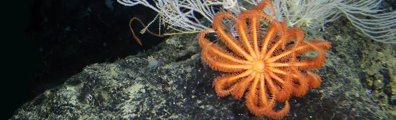
A brief look at any magazine pertaining to our natural world, such as National Geographic, would show a rich variety of vertebrates, especially mammals and birds. To most people, these are the animals that attract our attention. Concentrating on vertebrates, however, gives us a rather biased and limited view of animal diversity, because it ignores nearly 97 percent of the animal kingdom—the invertebrates—animals that lack a cranium and a defined vertebral column or spine.
The invertebrate animal phyla exhibit an enormous variety of cells and tissues adapted for specific purposes, and frequently these tissues are unique to their phyla. These specializations show the range of cellular differentiation possible within the clade Opisthokonta, which has both unicellular and multicellular members. Cellular and structural specializations include cuticles for protection, spines and tiny harpoons for defense, toothy structures for feeding, and wings for flight. An exoskeleton may be adapted for movement or for the attachment of muscles as in the clams and insects. Secretory cells can produce venom, mucus, or digestive enzymes. The body plans of some phyla, such as those of the mollusks, annelids, arthropods, and echinoderms, have been modified and adapted throughout evolution to produce thousands of different forms. Perhaps you will find it amazing that an enormous number of both aquatic and terrestrial invertebrates—perhaps millions of species—have not yet been scientifically classified. As a result, the phylogenetic relationships among the invertebrates are constantly being updated as new information is collected about the organisms of each phylum.
28.1 Phylum Porifera¶
Learning Objectives
By the end of this section, you will be able to do the following:
- Describe the organizational features of the simplest multicellular organisms
- Explain the various body forms and bodily functions of sponges
As we have seen, the vast majority of invertebrate animals do not possess a defined bony vertebral endoskeleton, or a bony cranium. However, one of the most ancestral groups of deuterostome invertebrates, the Echinodermata, do produce tiny skeletal “bones” called ossicles that make up a true endoskeleton, or internal skeleton, covered by an epidermis.
We will start our investigation with the simplest of all the invertebrates—animals sometimes classified within the clade Parazoa (“beside the animals”). This clade currently includes only the phylum Placozoa (containing a single species, Trichoplax adhaerens), and the phylum Porifera, containing the more familiar sponges (Figure 28.2). The split between the Parazoa and the Eumetazoa (all animal clades above Parazoa) likely took place over a billion years ago.
We should reiterate here that the Porifera do not possess “true” tissues that are embryologically homologous to those of all other derived animal groups such as the insects and mammals. This is because they do not create a true gastrula during embryogenesis, and as a result do not produce a true endoderm or ectoderm. But even though they are not considered to have true tissues, they do have specialized cells that perform specific functions like tissues (for example, the external “pinacoderm” of a sponge acts like our epidermis). Thus, functionally, the poriferans can be said to have tissues; however, these tissues are likely not embryologically homologous to our own.
Sponge larvae (e.g., parenchymula and amphiblastula) are flagellated and able to swim; however, adults are non-motile and spend their life attached to a substratum. Since water is vital to sponges for feeding, excretion, and gas exchange, their body structure facilitates the movement of water through the sponge. Various canals, chambers, and cavities enable water to move through the sponge to allow the exchange of food and waste as well as the exchange of gases to nearly all body cells.
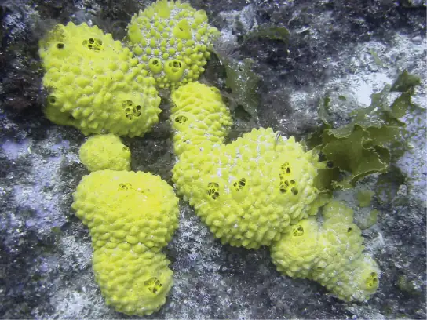
Morphology of Sponges¶
There are at least 5,000 named species of sponges, likely with thousands more yet to be classified. The morphology of the simplest sponges takes the shape of an irregular cylinder with a large central cavity, the spongocoel, occupying the inside of the cylinder (Figure 28.3). Water enters into the spongocoel through numerous pores, or ostia, that create openings in the body wall. Water entering the spongocoel is expelled via a large common opening called the osculum. However, we should note that sponges exhibit a range of diversity in body forms, including variations in the size and shape of the spongocoel, as well as the number and arrangement of feeding chambers within the body wall. In some sponges, multiple feeding chambers open off of a central spongocoel and in others, several feeding chambers connecting to one another may lie between the entry pores and the spongocoel.
While sponges do not exhibit true tissue-layer organization, they do have a number of functional “tissues” composed of different cell types specialized for distinct functions. For example, epithelial-like cells called pinacocytes form the outermost body, called a pinacoderm, that serves a protective function similar that of our epidermis. Scattered among the pinacoderm are the ostia that allow entry of water into the body of the sponge. These pores have given the sponges their phylum name Porifera—pore-bearers. In some sponges, ostia are formed by porocytes, single tube-shaped cells that act as valves to regulate the flow of water into the spongocoel. In other sponges, ostia are formed by folds in the body wall of the sponge. Between the outer layer and the feeding chambers of the sponge is a jelly-like substance called the mesohyl, which contains collagenous fibers. Various cell types reside within the mesohyl, including amoebocytes, the “stem cells” of sponges, and sclerocytes, which produce skeletal materials. The gel-like consistency of mesohyl acts like an endoskeleton and maintains the tubular morphology of sponges.
The feeding chambers inside the sponge are lined by choanocytes ("collar cells"). The structure of a choanocyte is critical to its function, which is to generate a directed water current through the sponge and to trap and ingest microscopic food particles by phagocytosis. These feeding cells are similar in appearance to unicellular choanoflagellates (Protista). This similarity suggests that sponges and choanoflagellates are closely related and likely share common ancestry. The body of the choanocyte is embedded in mesohyl and contains all the organelles required for normal cell function. Protruding into the “open space” inside the feeding chamber is a mesh-like collar composed of microvilli with a single flagellum in the center of the column. The beating of the flagella from all choanocytes draws water into the sponge through the numerous ostia, into the spaces lined by choanocytes, and eventually out through the osculum (or osculi, if the sponge consists of a colony of attached sponges). Food particles, including waterborne bacteria and unicellular organisms such as algae and various animal-like protists, are trapped by the sieve-like collar of the choanocytes, slide down toward the body of the cell, and are ingested by phagocytosis. Choanocytes also serve another surprising function: They can differentiate into sperm for sexual reproduction, at which time they become dislodged from the mesohyl and leave the sponge with expelled water through the osculum.
Interactive
Watch this video to see the movement of water through the sponge body. filter_sponges
The amoebocytes (derived from stem-cell-like archaeocytes), are so named because they move throughout the mesohyl in an amoeba-like fashion. They have a variety of functions: In addition to delivering nutrients from choanocytes to other cells within the sponge, they also give rise to eggs for sexual reproduction. (The eggs remain in the mesohyl, whereas the sperm cells are released into the water.) The amoebocytes can differentiate into other cell types of the sponge, such as collenocytes and lophocytes, which produce the collagen-like protein that support the mesohyl. Amoebocytes can also give rise to sclerocytes, which produce spicules (skeletal spikes of silica or calcium carbonate) in some sponges, and spongocytes, which produce the protein spongin in the majority of sponges. These different cell types in sponges are shown in Figure 28.3.
Visual Connection
![Part a shows a cross-section of a sponge, which is vase-shaped. The central opening is called the spongocoel. The body is filled with a gel-like substance called mesohyl. Pores within the body, called ostia, allow water to enter the spongocoel. Water exits through a top opening called an osculum. Part b shows an enlarged view of the sponge body. The outer surface is covered with cells called pinacocytes, which form the skin. Pinacocytes consume large food particles by phagocytosis. The inner surface is lined with cells called choanocytes, which have flagella that move water through the body. The mesohyl is sandwiched between the outer and inner surfaces. Various cell types exist within this layer. These include collagen-secreting lophocytes, amoebocytes, which carry out a variety of functions, and oocytes. Sclerocytes within this layer produce silica spicules that extend outside the body of the sponge. Porocytes, hollow tube-shaped cells that span the body of the sponge, regulate movement of water through the ostia.](img/figure-28-01-02.webp)
Which of the following statements is false?
- Choanocytes have flagella that propel water through the body.
- Pinacocytes can transform into any cell type.
- Lophocytes secrete collagen.
- Porocytes control the flow of water through pores in the sponge body.
Interactive
Take an up-close tour through the sponge and its cells.
As we’ve seen, most sponges are supported by small bone-like spicules (usually tiny pointed structures made of calcium carbonate or silica) in the mesohyl. Spicules provide support for the body of the sponge, and may also deter predation. The presence and composition of spicules form the basis for differentiating three of the four classes of sponges (Figure 28.4). Sponges in class Calcarea produce calcium carbonate spicules and no spongin; those in class Hexactinellida produce six-rayed siliceous (glassy) spicules and no spongin; and those in class Demospongia contain spongin and may or may not have spicules; if present, those spicules are siliceous. Sponges in this last class have been used as bath sponges. Spicules are most conspicuously present in the glass sponges, class Hexactinellida. Some of the spicules may attain gigantic proportions. For example, relative to typical glass sponge spicules, whose size generally ranges from 3 to 10 mm, some of the basal spicules of the hexactinellid Monorhaphis chuni are enormous and grow up to 3 meters long! The glass sponges are also unusual in that most of their body cells are fused together to form a multinucleate syncytium. Because their cells are interconnected in this way, the hexactinellid sponges have no mesohyl. A fourth class of sponges, the Sclerospongiae, was described from species discovered in underwater tunnels. These are also called coralline sponges after their multilayered calcium carbonate skeletons. Dating based on the rate of deposition of the skeletal layers suggests that some of these sponges are hundreds of years old.
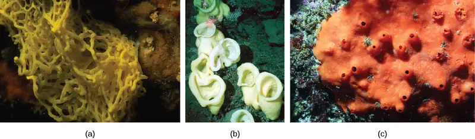
Interactive
Use the Interactive Sponge Guide to identify species of sponges based on their external form, mineral skeleton, fiber, and skeletal architecture.
Physiological Processes in Sponges¶
Sponges, despite being simple organisms, regulate their different physiological processes through a variety of mechanisms. These processes regulate their metabolism, reproduction, and locomotion.
Digestion¶
Sponges lack complex digestive, respiratory, circulatory, and nervous systems. Their food is trapped as water passes through the ostia and out through the osculum. Bacteria smaller than 0.5 microns in size are trapped by choanocytes, which are the principal cells engaged in feeding, and are ingested by phagocytosis. However, particles that are larger than the ostia may be phagocytized at the sponge's surface by pinacocytes. In some sponges, amoebocytes transport food from cells that have ingested food particles to those that do not. In sponges, in spite of what looks like a large digestive cavity, all digestion is intracellular. The limit of this type of digestion is that food particles must be smaller than individual sponge cells.
All other major body functions in the sponge (gas exchange, circulation, excretion) are performed by diffusion between the cells that line the openings within the sponge and the water that is passing through those openings. All cell types within the sponge obtain oxygen from water through diffusion. Likewise, carbon dioxide is released into seawater by diffusion. In addition, nitrogenous waste produced as a byproduct of protein metabolism is excreted via diffusion by individual cells into the water as it passes through the sponge.
Some sponges host green algae or cyanobacteria as endosymbionts within archeocytes and other cells. It may be a surprise to learn that there are nearly 150 species of carnivorous sponges, which feed primarily on tiny crustaceans, snaring them through sticky threads or hooked spicules!
Although there is no specialized nervous system in sponges, there is intercellular communication that can regulate events like contraction of the sponge's body or the activity of the choanocytes.
Reproduction¶
Sponges reproduce by sexual as well as asexual methods. The typical means of asexual reproduction is either fragmentation (during this process, a piece of the sponge breaks off, settles on a new substrate, and develops into a new individual), or budding (a genetically identical outgrowth grows from the parent and eventually detaches or remains attached to form a colony). An atypical type of asexual reproduction is found only in freshwater sponges and occurs through the formation of gemmules. Gemmules are environmentally resistant structures produced by adult sponges (e.g., in the freshwater sponge Spongilla). In gemmules, an inner layer of archeocytes (amoebocytes) is surrounded by a pneumatic cellular layer that may be reinforced with spicules. In freshwater sponges, gemmules may survive hostile environmental conditions like changes in temperature, and then serve to recolonize the habitat once environmental conditions improve and stabilize. Gemmules are capable of attaching to a substratum and generating a new sponge. Since gemmules can withstand harsh environments, are resistant to desiccation, and remain dormant for long periods, they are an excellent means of colonization for a sessile organism.
Sexual reproduction in sponges occurs when gametes are generated. Oocytes arise by the differentiation of amoebocytes and are retained within the spongocoel, whereas spermatozoa result from the differentiation of choanocytes and are ejected via the osculum. Sponges are monoecious (hermaphroditic), which means that one individual can produce both gametes (eggs and sperm) simultaneously. In some sponges, production of gametes may occur throughout the year, whereas other sponges may show sexual cycles depending upon water temperature. Sponges may also become sequentially hermaphroditic, producing oocytes first and spermatozoa later. This temporal separation of gametes produced by the same sponge helps to encourage cross-fertilization and genetic diversity. Spermatozoa carried along by water currents can fertilize the oocytes borne in the mesohyl of other sponges. Early larval development occurs within the sponge, and free-swimming larvae (such as flagellated parenchymula) are then released via the osculum.
Locomotion¶
Sponges are generally sessile as adults and spend their lives attached to a fixed substratum. They do not show movement over large distances like other free-swimming marine invertebrates. However, sponge cells are capable of creeping along substrata via organizational plasticity, i.e., rearranging their cells. Under experimental conditions, researchers have shown that sponge cells spread on a physical support demonstrate a leading edge for directed movement. It has been speculated that this localized creeping movement may help sponges adjust to microenvironments near the point of attachment. It must be noted, however, that this pattern of movement has been documented in laboratories, it remains to be observed in natural sponge habitats.
Interactive
Watch this BBC video showing the array of sponges seen along the Cayman Wall during a submersible dive.
28.2 Phylum Cnidaria¶
Learning Objectives
By the end of this section, you will be able to do the following:
- Compare structural and organization characteristics of Porifera and Cnidaria
- Describe the progressive development of tissues and their relevance to animal complexity
- Identify the two general body forms found in the Cnidaria
- Describe the identifying features of the major cnidarian classes
Phylum Cnidaria includes animals that exhibit radial or biradial symmetry and are diploblastic, meaning that they develop from two embryonic layers, ectoderm and endoderm. Nearly all (about 99 percent) cnidarians are marine species.
Whereas the defining cell type for the sponges is the choanocyte, the defining cell type for the cnidarians is the cnidocyte, or stinging cell. These cells are located around the mouth and on the tentacles, and serve to capture prey or repel predators. Cnidocytes have large stinging organelles called nematocysts, which usually contain barbs at the base of a long coiled thread. The outer wall of the cell has a hairlike projection called a cnidocil, which is sensitive to tactile stimulation. If the cnidocils are touched, the hollow threads evert with enormous acceleration, approaching 40,000 times that of gravity. The microscopic threads then either entangle the prey or instantly penetrate the flesh of the prey or predator, releasing toxins (including neurotoxins and pore-forming toxins that can lead to cell lysis) into the target, thereby immobilizing it or paralyzing it (see Figure 28.5).
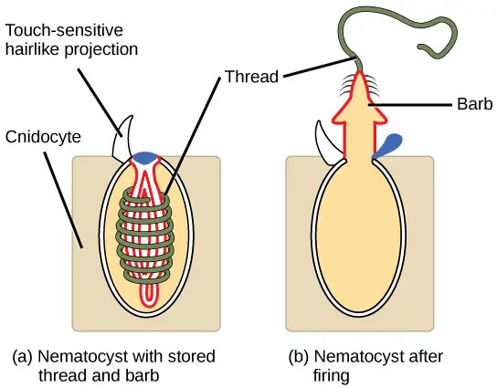
Interactive
View this video animation showing two anemones engaged in a battle.
Two distinct body plans are found in Cnidarians: the polyp or tuliplike "stalk" form and the medusa or "bell" form. (Figure 28.6). An example of the polyp form is found in the genus Hydra, whereas the most typical form of medusa is found in the group called the “sea jellies” (jellyfish). Polyp forms are sessile as adults, with a single opening (the mouth/anus) to the digestive cavity facing up with tentacles surrounding it. Medusa forms are motile, with the mouth and tentacles hanging down from an umbrella-shaped bell.
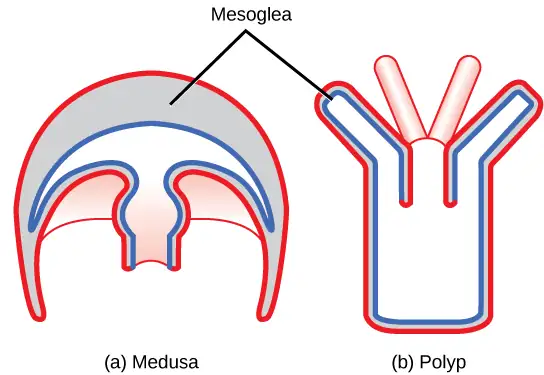
Some cnidarians are dimorphic, that is, they exhibit both body plans during their life cycle. In these species, the polyp serves as the asexual phase, while the medusa serves as the sexual stage and produces gametes. However, both body forms are diploid.
An example of cnidarian dimorphism can be seen in the colonial hydroid Obelia. The sessile asexual colony has two types of polyps, shown in Figure 28.7. The first is the gastrozooid, which is adapted for capturing prey and feeding. In Obelia, all polyps are connected through a common digestive cavity called a coenosarc. The other type of polyp is the gonozooid, adapted for the asexual budding and the production of sexual medusae. The reproductive buds from the gonozooid break off and mature into free-swimming medusae, which are either male or female (dioecious). Each medusa has either several testes or several ovaries in which meiosis occurs to produce sperm or egg cells. Interestingly, the gamete-producing cells do not arise within the gonad itself, but migrate into it from the tissues in the gonozooid. This separate origin of gonad and gametes is common throughout the eumetazoa. The gametes are released into the surrounding water, and after fertilization, the zygote develops into a blastula, which soon develops into a ciliated, bilaterally symmetrical planula larva. The planula swims freely for a while, but eventually attaches to a substrate and becomes a single polyp, from which a new colony of polyps is formed by budding.
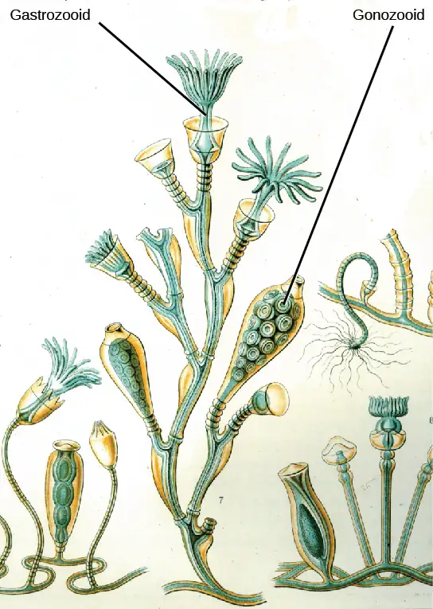
Interactive
Click here to follow an Obelia life cycle animation.
All cnidarians are diploblastic and thus have two “epithelial” layers in the body that are derived from the endoderm and ectoderm of the embryo. The outer layer (from ectoderm) is called the epidermis and lines the outside of the animal, whereas the inner layer (from endoderm) is called the gastrodermis and lines the digestive cavity. In the planula larva, a layer of ectoderm surrounds a solid mass of endoderm, but as the polyp develops, the digestive or gastrovascular cavity opens within the endoderm. A non-living, jelly-like mesoglea lies between these two epithelial layers. In terms of cellular complexity, cnidarians show the presence of differentiated cell types in each tissue layer, such as nerve cells, contractile epithelial cells, enzyme-secreting cells, and nutrient-absorbing cells, as well as the presence of intercellular connections. However, with a few notable exceptions such as statocysts and rhopalia (see below), the development of organs or organ systems is not advanced in this phylum.
The nervous system is rudimentary, with nerve cells organized in a network scattered across the body. This nerve net may show the presence of groups of cells that form nerve plexi (singular: plexus) or nerve cords. Organization of the nervous system in the motile medusa is more complex than that of the sessile polyp, with a nerve ring around the edge of the medusa bell that controls the action of the tentacles. Cnidarian nerve cells show mixed characteristics of motor and sensory neurons. The predominant signaling molecules in these primitive nervous systems are peptides, which perform both excitatory and inhibitory functions. Despite the simplicity of the nervous system, it is remarkable that it coordinates the complicated movement of the tentacles, the drawing of captured prey to the mouth, the digestion of food, and the expulsion of waste.
The gastrovascular cavity has only one opening that serves as both a mouth and an anus; this arrangement is called an incomplete digestive system. In the gastrovascular cavity, extracellular digestion occurs as food is taken into the gastrovascular cavity, enzymes are secreted into the cavity, and the cells lining the cavity absorb nutrients. However, some intracellular digestion also occurs. The gastrovascular cavity distributes nutrients throughout the body of the animal, with nutrients passing from the digestive cavity across the mesoglea to the epidermal cells. Thus, this cavity serves both digestive and circulatory functions.
Cnidarian cells exchange oxygen and carbon dioxide by diffusion between cells in the epidermis and water in the environment, and between cells in the gastrodermis and water in the gastrovascular cavity. The lack of a circulatory system to move dissolved gases limits the thickness of the body wall and necessitates a non-living mesoglea between the layers. In the cnidarians with a thicker mesoglea, a number of canals help to distribute both nutrients and gases. There is neither an excretory system nor organs, and nitrogenous wastes simply diffuse from the cells into the water outside the animal or into the gastrovascular cavity.
The phylum Cnidaria contains about 10,000 described species divided into two monophyletic clades: the Anthozoa and the Medusozoa. The Anthozoa include the corals, sea fans, sea whips, and the sea anemones. The Medusozoa include several classes of Cnidaria in two clades: The Hydrozoa include sessile forms, some medusoid forms, and swimming colonial forms like the Portuguese man-of-war. The other clade contains various types of jellies including both Scyphozoa and Cubozoa. The Anthozoa contain only sessile polyp forms, while the Medusozoa include species with both polyp and medusa forms in their life cycle.
Class Anthozoa¶
The class Anthozoa ("flower animals") includes sea anemones (Figure 28.8), sea pens, and corals, with an estimated number of 6,100 described species. Sea anemones are usually brightly colored and can attain a size of 1.8 to 10 cm in diameter. Individual animals are cylindrical in shape and are attached directly to a substrate.

The mouth of a sea anemone is surrounded by tentacles that bear cnidocytes. The slit-like mouth opening and flattened pharynx are lined with ectoderm. This structure of the pharynx makes anemones bilaterally symmetrical. A ciliated groove called a siphonoglyph is found on two opposite sides of the pharynx and directs water into it. The pharynx is the muscular part of the digestive system that serves to ingest as well as egest food, and may extend for up to two-thirds the length of the body before opening into the gastrovascular cavity. This cavity is divided into several chambers by longitudinal septa called mesenteries. Each mesentery consists of a fold of gastrodermal tissue with a layer of mesoglea between the sheets of gastrodermis. Mesenteries do not divide the gastrovascular cavity completely, and the smaller cavities coalesce at the pharyngeal opening. The adaptive benefit of the mesenteries appears to be an increase in surface area for absorption of nutrients and gas exchange, as well as additional mechanical support for the body of the anemone.
Sea anemones feed on small fish and shrimp, usually by immobilizing their prey with nematocysts. Some sea anemones establish a mutualistic relationship with hermit crabs when the crab seizes and attaches them to their shell. In this relationship, the anemone gets food particles from prey caught by the crab, and the crab is protected from the predators by the stinging cells of the anemone. Some species of anemone fish, or clownfish, are also able to live with sea anemones because they build up an acquired immunity to the toxins contained within the nematocysts and also secrete a protective mucus that prevents them from being stung.
The structure of coral polyps is similar to that of anemones, although the individual polyps are usually smaller and part of a colony, some of which are massive and the size of small buildings. Coral polyps feed on smaller planktonic organisms, including algae, bacteria, and invertebrate larvae. Some anthozoans have symbiotic associations with dinoflagellate algae called zooxanthellae. The mutually beneficial relationship between zooxanthellae and modern corals—which provides the algae with shelter—gives coral reefs their colors and supplies both organisms with nutrients. This complex mutualistic association began more than 210 million years ago, according to a new study by an international team of scientists. That this symbiotic relationship arose during a time of massive worldwide coral-reef expansion suggests that the interconnection of algae and coral is crucial for the health of coral reefs, which provide habitat for roughly one-fourth of all marine life. Reefs are threatened by a trend in ocean warming that has caused corals to expel their zooxanthellae algae and turn white, a process called coral bleaching.
Anthozoans remain polypoid (note that this term is easily confused with "polyploid") throughout their lives and can reproduce asexually by budding or fragmentation, or sexually by producing gametes. Male or female gametes produced by a polyp fuse to give rise to a free-swimming planula larva. The larva settles on a suitable substratum and develops into a sessile polyp.
Class Scyphozoa¶
Class Scyphozoa ("cup animals") includes only marine jellies, with about 200 known species. The medusa is the prominent stage in the life cycle, although there is a polyp stage in the life cycle of most species. Most jellies range from 2 to 40 cm in length but the largest scyphozoan species, Cyanea capillata, can reach a size of two meters in diameter. Scyphozoans display a characteristic bell-like morphology (Figure 28.9).
![Part a shows a photo of a bright red jellyfish with a dome-shaped body. Long tentacles drift from the bottom edge of the dome, and ribbon-like appendages trail from the middle of the body. Part b shows a cross-section of a jellyfish, which has nematocyst-bearing tentacles hanging from the bottom of the dome. Underneath the middle of the dome is an opening that serves as both a mouth and an anus. The opening leads to a gastrovascular cavity that is lined with a gastrodermis. The outer surface of the body is covered with an epidermis. Between the epidermis and gastrodermis is the mesoglea.](img/figure-28-02-05ab.webp)
In the sea jelly, a mouth opening is present on the underside of the animal, surrounded by hollow tentacles bearing nematocysts. Scyphozoans live most of their life cycle as free-swimming, solitary carnivores. The mouth leads to the gastrovascular cavity, which may be sectioned into four interconnected sacs, called diverticuli. In some species, the digestive system may branch further into radial canals. Like the septa in anthozoans, the branched gastrovascular cells serve two functions: to increase the surface area for nutrient absorption and diffusion, and to support the body of the animal.
In scyphozoans, nerve cells are organized in a nerve net that extends over the entire body, with a nerve ring around the edge of the bell. Clusters of sensory organs called rhopalia may be present in pockets in the edge of the bell. Jellies have a ring of muscles lining the dome of the body, which provides the contractile force required to swim through water, as well as to draw in food from the water as they swim. Scyphozoans have separate sexes. The gonads are formed from the gastrodermis and gametes are expelled through the mouth. Planula larvae are formed by external fertilization; they settle on a substratum in a polypoid form. These polyps may bud to form additional polyps or begin immediately to produce medusa buds. In a few species, the planula larva may develop directly into the medusa. The life cycle (Figure 28.10) of most scyphozoans includes both sexual medusoid and asexual polypoid body forms.
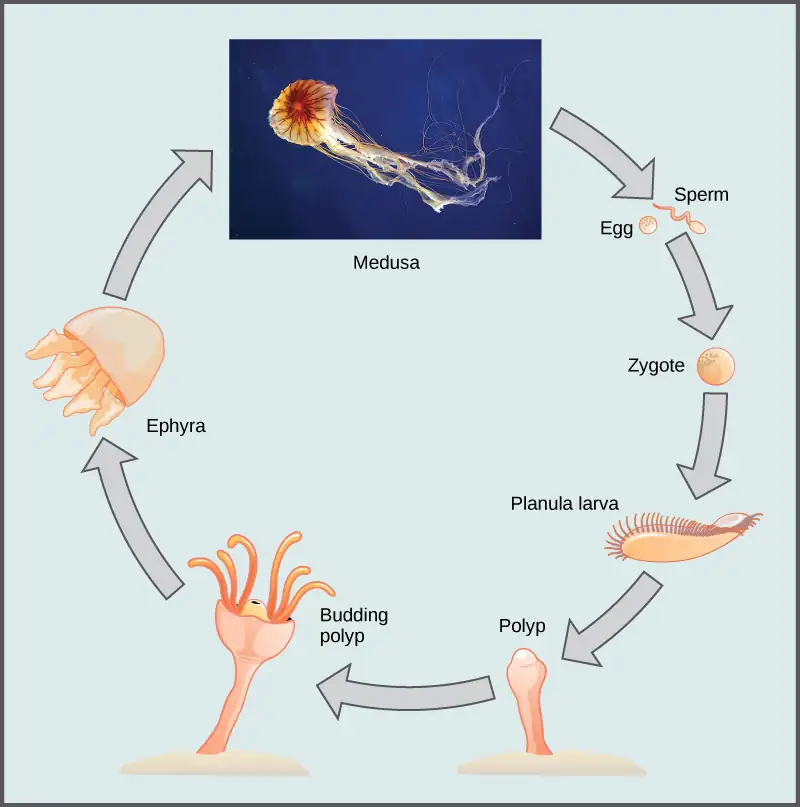
Class Cubozoa¶
This class includes jellies that have a box-shaped medusa, or a bell that is square in cross-section, and are colloquially known as “box jellyfish.” These species may achieve sizes of 15 to 25 cm, but typically members of the Cubozoa are not as large as those of the Scyphozoa. However, cubozoans display overall morphological and anatomical characteristics that are similar to those of the scyphozoans. A prominent difference between the two classes is the arrangement of tentacles. The cubozoans contain muscular pads called pedalia at the corners of the square bell canopy, with one or more tentacles attached to each pedalium. In some cases, the digestive system may extend into the pedalia. Nematocysts may be arranged in a spiral configuration along the tentacles; this arrangement helps to effectively subdue and capture prey. Cubozoans include the most venomous of all the cnidarians (Figure 28.11).
These animals are unusual in having image-forming eyes, including a cornea, lens, and retina. Because these structures are made from a number of interactive tissues, they can be called true organs. Eyes are located in four clusters between each pair of pedalia. Each cluster consists of four simple eye spots plus two image-forming eyes oriented in different directions. How images formed by these very complex eyes are processed remains a mystery, since cubozoans have extensive nerve nets but no distinct brain. Nonetheless, the presence of eyes helps the cubozoans to be active and effective hunters of small marine animals like worms, arthropods, and fish.
Cubozoans have separate sexes and fertilization occurs inside the female. Planula larvae may develop inside the female or be released, depending on species. Each planula develops into a polyp. These polyps may bud to form more polyps to create a colony; each polyp then transforms into a single medusa.
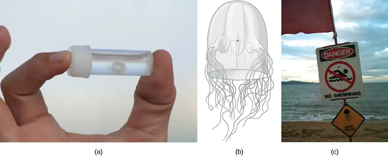
Class Hydrozoa¶
Hydrozoa is a diverse group that includes nearly 3,200 species; most are marine, although some freshwater species are known (Figure 28.12). Most species exhibit both polypoid and medusoid forms in their lifecycles, although the familiar Hydra has only the polyp form. The medusoid form has a muscular veil or velum below the margin of the bell and for this reason is called a hydromedusa. In contrast, the medusoid form of Scyphozoa lacks a velum and is termed a scyphomedusa.
The polyp form in these animals often shows a cylindrical morphology with a central gastrovascular cavity lined by the gastrodermis. The gastrodermis and epidermis have a simple layer of mesoglea sandwiched between them. A mouth opening, surrounded by tentacles, is present at the oral end of the animal. Many hydrozoans form sessile, branched colonies of specialized polyps that share a common, branching gastrovascular cavity (coenosarc), such as is found in the colonial hydroid Obelia.
Free-floating colonial species called siphonophores contain both medusoid and polypoid individuals that are specialized for feeding, defense, or reproduction. The distinctive rainbow-hued float of the Portuguese man o’ war (Physalia physalis) creates a pneumatophore with which it regulates buoyancy by filling and expelling carbon monoxide gas. At first glance, these complex superorganisms appear to be a single organism; but the reality is that even the tentacles are actually composed of zooids laden with nematocysts. Thus, although it superficially resembles a typical medusozoan jellyfish, P. physalis is a free-floating hydrozoan colony; each specimen is made up of many hundreds of organisms, each specialized for a certain function, including motility and buoyancy, feeding, reproduction and defense. Although they are carnivorous and feed on many soft bodied marine animals, P. physalis lack stomachs and instead have specialized polyps called gastrozooids that they use to digest their prey in the open water.
Physalia has male and female colonies, which release their gametes into the water. The zygote develops into a single individual, which then buds asexually to form a new colony. Siphonophores include the largest known floating cnidarian colonies such as Praya dubia, whose chain of zooids can get up to 50 meters (165 feet) long. Other hydrozoan species are solitary polyps (Hydra) or solitary hydromedusae (Gonionemus). One defining characteristic shared by the hydrozoans is that their gonads are derived from epidermal tissue, whereas in all other cnidarians they are derived from gastrodermal tissue.
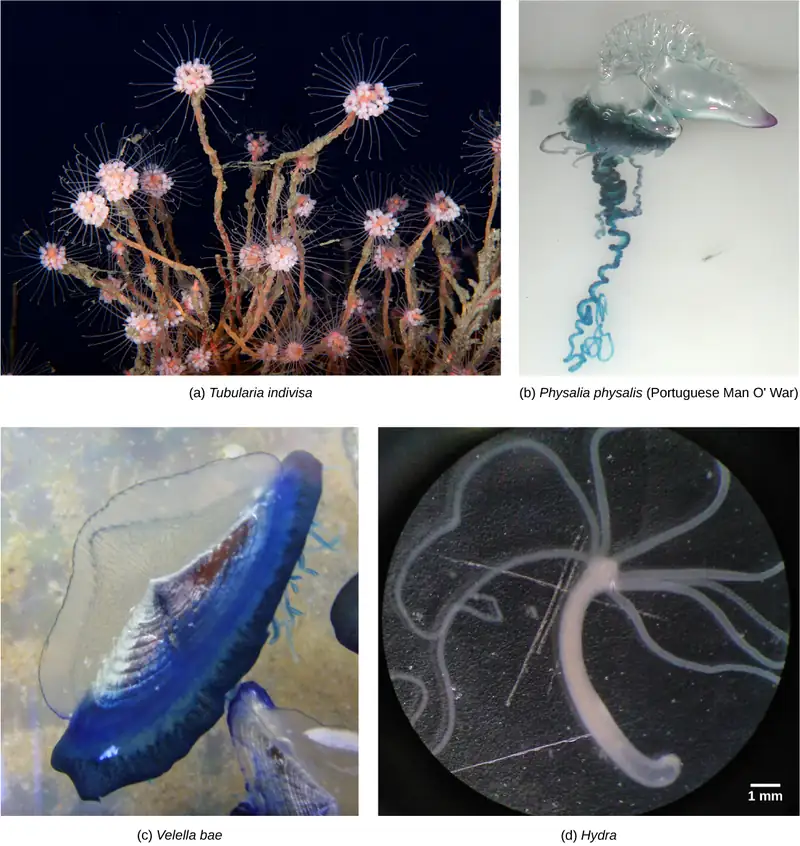
28.3 Superphylum Lophotrochozoa: Flatworms, Rotifers, and Nemerteans¶
Learning Objectives
By the end of this section, you will be able to do the following:
- Describe the unique anatomical and morphological features of flatworms, rotifers, and Nemertea
- Identify an important extracoelomic cavity found in Nemertea
- Explain the key features of Platyhelminthes and their importance as parasites
Animals belonging to superphylum Lophotrochozoa are triploblastic (have three germ layers) and unlike the cnidarians, they possess an embryonic mesoderm sandwiched between the ectoderm and endoderm. These phyla are also bilaterally symmetrical, meaning that a longitudinal section will divide them into right and left sides that are superficially symmetrical. In these phyla, we also see the beginning of cephalization, the evolution of a concentration of nervous tissues and sensory organs in the head of the organism—exactly where a mobile bilaterally symmetrical organism first encounters its environment.
Lophotrochozoa are also protostomes, in which the blastopore, or the point of invagination of the ectoderm (outer germ layer), becomes the mouth opening into the alimentary canal. This developmental pattern is called protostomy or “first mouth.” Protostomes include acoelomate, pseudocoelomate, and eucoelomate phyla. The coelom is a cavity that separates the ectoderm from the endoderm. In acoelomates, a solid mass of mesoderm is sandwiched between the ectoderm and endoderm and does not form a cavity or “coelom,” leaving little room for organ development; in pseudocoelomates, there is a cavity or pseudocoelom that replaces the blastocoel (the cavity within the blastula), but it is only lined by mesoderm on the outside of the cavity, leaving the gut tube and organs unlined; in eucoelomates, the cavity that obliterates the blastocoel as the coelom develops is lined both on the outside of the cavity (parietal layer) and also on the inside of the cavity, around the gut tube and the internal organs (visceral layer).
Eucoelmate protostomes are schizocoels, in which mesoderm-producing cells typically migrate into the blastocoel during gastrulation and multiply to form a solid mass of cells. Cavities then develop within the cell mass to form the coelom. Since the forming body cavity splits the mesoderm, this protostomic coelom is termed a schizocoelom. As we will see later in this chapter, chordates, the phylum to which we belong, generally develop a coelom by enterocoely: pouches of mesoderm pinch off the invaginating primitive gut, or archenteron, and then fuse to form a complete coelom. We should note here that a eucoelomate can form its “true coelom” by either schizocoely or enterocoely. The process that produces the coelom is different and of taxonomic importance, but the result is the same: a complete, mesodermally lined coelom.
Most organisms placed in the superphylum Lophotrochozoa possess either a lophophore feeding apparatus or a trochophore larvae (thus the contracted name, “lopho-trocho-zoa”). The lophophore is a feeding structure composed of a set of ciliated tentacles surrounding the mouth. A trochophore is a free-swimming larva characterized by two bands of cilia surrounding a top-like body. Some of the phyla classified as Lophotrochozoa may be missing one or both of these defining structures. Nevertheless their placement with the Lophotrochozoa is upheld when ribosomal RNA and other gene sequences are compared. The systematics of this complex group is still unclear and much more work remains to resolve the cladistic relationships among them.
Phylum Platyhelminthes¶
The flatworms are acoelomate organisms that include many free-living and parasitic forms. The flatworms possess neither a lophophore nor trochophore larvae, although the larvae of one group of flatworms, the Polycladida (named after its many-branched digestive tract), are considered to be homologous to trochophore larvae. Spiral cleavage is also seen in the polycladids and other basal flatworm groups. The developmental pattern of some of the free-living forms is obscured by a phenomenon called "blastomere anarchy," in which a sort of temporary feeding larva forms, followed by a regrouping of cells within the embryo that gives rise to a second-stage embryo. However, both the monophyly of the flatworms and their placement in the Lophotrochozoa has been supported by molecular analyses.
The Platyhelminthes consist of two monophyletic lineages: the Catenulida and the Rhabditophora. The Catenulida, or "chain worms," is a small clade of just over 100 species. These worms typically reproduce asexually by budding. However, the offspring do not fully detach from the parents and the formation resembles a chain in appearance. All of the flatworms discussed here are part of the Rhabditophora ("rhabdite bearers"). Rhabdites are rodlike structures discharged in the mucus produced by some free-living flatworms; they likely serve in both defense and to provide traction for ciliary gliding along the substrate. Unlike free-living flatworms, many species of trematodes and cestodes are parasitic, including important parasites of humans.
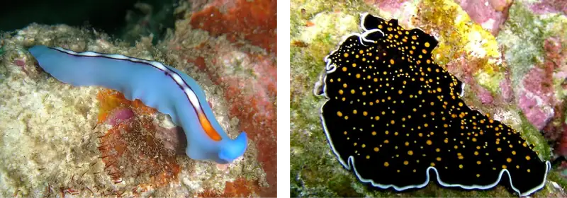
Flatworms have three embryonic tissue layers that give rise to epidermal tissues (from ectoderm), the lining of the digestive system (from endoderm), and other internal tissues (from mesoderm). The epidermal tissue is a single layer of cells or a layer of fused cells (syncytium) that covers two layers of muscle, one circular and the other longitudinal. The mesodermal tissues include mesenchymal cells that contain collagen and support secretory cells that produce mucus and other materials at the surface. Because flatworms are acoelomates, the mesodermal layer forms a solid mass between the outer epidermal surface and the cavity of the digestive system.
Physiological Processes of Flatworms¶
The free-living species of flatworms are predators or scavengers. Parasitic forms feed by absorbing nutrients provided by their hosts. Most flatworms, such as the planarian shown in Figure 28.14, have a branching gastrovascular cavity rather than a complete digestive system. In such animals, the “mouth” is also used to expel waste materials from the digestive system, and thus also serves as an anus. (A few species may have a second anal pore or opening.) The gut may be a simple sac or highly branched. Digestion is primarily extracellular, with digested materials taken into the cells of the gut lining by phagocytosis. One parasitic group, the tapeworms (cestodes), lacks a digestive system altogether, and absorb digested food from the host.
Flatworms have an excretory system with a network of tubules attached to flame cells, whose cilia beat to direct waste fluids concentrated in the tubules out of the body through excretory pores. The system is responsible for the regulation of dissolved salts and the excretion of nitrogenous wastes. The nervous system consists of a pair of lateral nerve cords running the length of the body with transverse connections between them. Two large cerebral ganglia—concentrations of nerve cell bodies at the anterior end of the worm—are associated with photosensory and chemosensory cells. There is neither a circulatory nor a respiratory system, with gas and nutrient exchange dependent on diffusion and cell-to-cell junctions. This necessarily limits the thickness of the body in these organisms, constraining them to be “flat” worms. Most flatworm species are monoecious (both male and female reproductive organs are found in the same individual), and fertilization is typically internal. Asexual reproduction by fission is common in some groups.
![Illustration shows the digestive, nervous and excretory systems in a flat, worm-like planaria. The digestive system starts at the ventral mouth opening in the middle of the animal, and then extends to the head through the middle of the body, and along the sides of the body. Many lateral branches occur along the digestive system. The nervous system has 2 cerebral ganglia at the eyes in the head, and 2 ventral nerve cords with transverse connections along the length of the body to the tail. The excretory system is arranged in 2 long mesh-like structures down each side of the body.](img/figure-28-03-01.webp)
Diversity of Flatworms¶
The flatworms have been traditionally divided into four classes: Turbellaria, Monogenea, Trematoda, and Cestoda (Figure 28.15). However, the relationships among members of these classes has recently been reassessed, with the turbellarians in particular now viewed as paraphyletic, since its descendants may also include members of the other three classes. Members of the clade or class Rhabditophora are now dispersed among multiple orders of Platyhelminthes, the most familiar of these being the Polycladida, which contains the large marine flatworms; the Tricladida (which includes Dugesia [“planaria”] and Planaria and its relatives); and the major parasitic orders: Monogenea (fish ectoparasites), Trematoda (flukes), and Cestoda (tapeworms), which together form a monophyletic clade.
![Photo A shows a Bedford's flatworm from the class Turbellaria. The worm has the appearance of a fringed ribbon, black with pink stripes, swimming above the sand. Photo B shows a Dactylogyrus from the class Monogenea. The worm's body is a long, thin translucent oval with bulges at one end that give the appearance of a head. Three dark spots appear in the head, and four more dark spots three-quarters appear of the way down the body. Anchors that enable the worm to latch onto gills are located near these spots. Photo C shows foot-shaped brown worms. Photo D shows a long, thin ribbon-like white worm.](img/figure-28-03-02abcd.webp)
Most free-living flatworms are marine polycladids, although tricladid species live in freshwater or moist terrestrial environments, and there are a number of members from other orders in both environments. The ventral epidermis of free-living flatworms is ciliated, which facilitates their locomotion. Some free-living flatworms are capable of remarkable feats of regeneration in which an individual may regrow its head or tail after being severed, or even several heads if the planaria is cut lengthwise.
The monogeneans are ectoparasites, mostly of fish, with simple life cycles that consist of a free-swimming larva that attaches to a fish, prior to its transformation to the ectoparasitic adult form. The parasite has only one host and that host is usually very specific. The worms may produce enzymes that digest the host tissues, or they may simply graze on surface mucus and skin particles. Most monogeneans are hermaphroditic, but the male gametes develop first and so cross-fertilization is quite common.
The trematodes, or flukes, are internal parasites of mollusks and many other groups, including humans. Trematodes have complex life cycles that involve a primary host in which sexual reproduction occurs, and one or more secondary hosts in which asexual reproduction occurs. The primary host is usually a vertebrate and the secondary host is almost always a mollusk, in which multiple larvae are produced asexually. Trematodes, which attach internally to the host via an oral and medial sucker, are responsible for serious human diseases including schistosomiasis, caused by several species of the blood fluke, Schistosoma spp. Various forms of schistosomiasis infect an estimated 200 million people in the tropics, leading to organ damage, secondary infection by bacteria, and chronic symptoms like fatigue. Infection occurs when the human enters the water and metacercaria larvae, released from the snail host, locate and penetrate the skin. The parasite infects various organs in the body and feeds on red blood cells before reproducing.
Many of the eggs are released in feces and find their way into a waterway, where they are able to reinfect the snail host. The eggs, which have a barb on them, can damage the vascular system of the human host, causing ulceration, abscesses, and bloody diarrhea, wherever they reside, thereby allowing other pathogens to cause secondary infections. In fact, it is the parasite’s eggs that produce most of the main ill effects of schistosomiasis. Many eggs do not make the transit through the veins of the host for elimination, and are swept by blood flow back to the liver and other locations, where they can cause severe inflammation. In the liver, the errant eggs may impede circulation and cause cirrhosis. Control is difficult in impoverished areas in unsanitary, crowded conditions, and prognosis is poor in people with heavy infections of Schistosoma japonicum, without early treatment.
The cestodes, or tapeworms, are also internal parasites, mainly of vertebrates (Figure 28.16). Tapeworms, such as those of Taenia spp, live in the intestinal tract of the primary host and remain fixed using a sucker or hooks on the anterior end, or scolex, of the tapeworm body, which is essentially a colony of similar subunits called proglottids. Each proglottid may contain an excretory system with flame cells, along with reproductive structures, both male and female. Because they are so long and flat, tapeworms do not need a digestive system; instead, they absorb nutrients from the food matter surrounding them in the host’s intestine by diffusion.
Proglottids are produced at the scolex and gradually migrate to the end of the tapeworm; at this point, they are “mature” and all structures except fertilized eggs have degenerated. Most reproduction occurs by cross-fertilization between different worms in the same host, but may also occur between proglottids. The mature proglottids detach from the body of the worm and are released into the feces of the organism. The eggs are eaten by an intermediate host, typically another vertebrate. The juvenile worm infects the intermediate host and takes up residence, usually in muscle tissue. When the muscle tissue is consumed by the primary host, the cycle is completed. There are several tapeworm parasites of humans that are transmitted by eating uncooked or poorly cooked pork, beef, or fish.
![The tapeworm life cycle begins when (1) eggs or tapeworm segments, called proglottids, pass from human feces into the environment. Taenia saginata infects cattle and Taenia solium infects pigs when (2) they eat contaminated vegetation. The embryo penetrates the animal intestinal wall (3) and takes up residence in muscle tissue, where it transforms into the larval form (4). Humans who consume raw or undercooked infected meat become infected (5) when the tapeworm attaches itself to the intestinal wall via suckers or hooks on the scolex, or head (6). The mature worm produces proglottids and eggs, which pass from the body in feces (7), completing the cycle.](img/figure-b28-03-08.webp)
Phylum Rotifera¶
The rotifers ("wheel-bearer") belong to a group of microscopic (about 100 µm to 2 mm) mostly aquatic animals that get their name from the corona—a pair of ciliated feeding structures that appear to rotate when viewed under the light microscope (Figure 28.17). Although their taxonomic status is currently in flux, one treatment places the rotifers in three classes: Bdelloidea, Monogononta, and Seisonidea. In addition, the parasitic “spiny headed worms” currently in phylum Acanthocephala, appear to be modified rotifers and will probably be placed into the group in the near future. Undoubtedly the rotifers will continue to be revised as more phylogenetic evidence becomes available.
The pseudocoelomate body of a rotifer is remarkably complex for such a small animal (roughly the size of a Paramecium) and is divided into three sections: a head (which contains the corona), a trunk (which contains most of the internal organs), and the foot. A cuticle, rigid in some species and flexible in others, covers the body surface. They have both skeletal muscle associated with locomotion and visceral muscles associated with the gut, both composed of single cells. Rotifers are typically free-swimming or planktonic (drifting) organisms, but the toes or extensions of the foot can secrete a sticky material to help them adhere to surfaces. The head contains a number of eyespots and a bilobed “brain,” with nerves extending into the body.
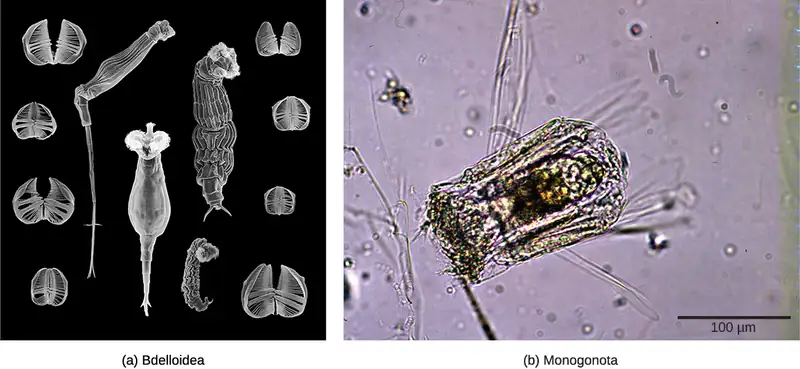
Rotifers are commonly found in freshwater and some saltwater environments throughout the world. As filter feeders, they will eat dead material, algae, and other microscopic living organisms, and are therefore very important components of aquatic food webs. A rotifer's food is directed toward the mouth by the current created from the movement of the coronal cilia. The food particles enter the mouth and travel first to the mastax—a muscular pharynx with toothy jaw-like structures. Examples of the jaws of various rotifers are seen in Figure 28.17a. Masticated food passes near digestive and salivary glands, into the stomach, and then to the intestines. Digestive and excretory wastes are collected in a cloacal bladder before being released out the anus.
Interactive
Watch this video to see rotifers feeding.
About 2,200 species of rotifers have been identified. Figure 28.18 shows the anatomy of a rotifer belonging to class Bdelloidea. Some rotifers are dioecious organisms and exhibit sexual dimorphism (males and females have different forms). In many dioecious species, males are short-lived and smaller with no digestive system and a single testis. Many rotifer species exhibit haplodiploidy, a method of sex determination in which a fertilized egg develops into a female and an unfertilized egg develops into a male. However, reproduction in the bdelloid rotifers is exclusively parthenogenetic and appears to have been so for millions of years: Thus, all bdelloid rotifers and their progeny are female! The bdelloids may compensate for this genetic insularity by borrowing genes from the DNA of other species. Up to 10% of a bdelloid genome comprises genes imported from related species. Some rotifer eggs are capable of extended dormancy for protection during harsh environmental conditions.
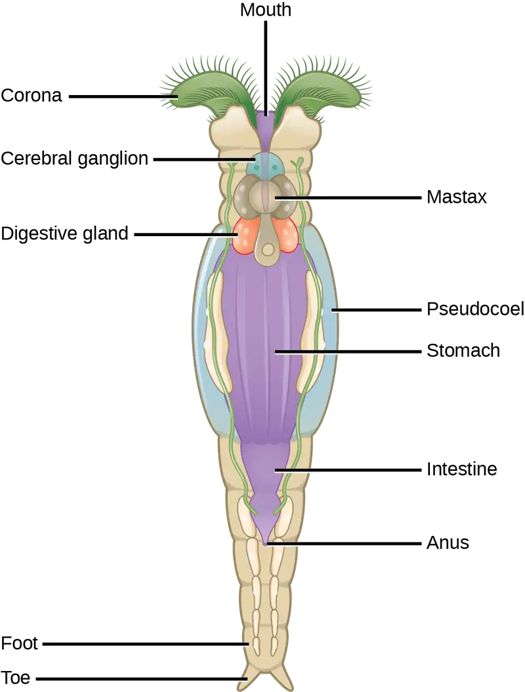
Phylum Nemertea¶
The Nemertea are colloquially known as ribbon worms or proboscis worms. Most species of phylum Nemertea are marine and predominantly benthic (bottom dwellers), with an estimated 900 known species. However, nemerteans have been recorded in freshwater and very damp terrestrial habitats as well. Most nemerteans are carnivores, feeding on worms, clams, and crustaceans. Some species are scavengers, and some, like Malacobdella grossa, have also evolved commensal relationships with mollusks. Economically important species have at times devastated commercial fishing of clams and crabs. Nemerteans have almost no predators and two species are sold as fish bait.
Morphology¶
Nemerteans vary in size from 1 cm to several meters. They show bilateral symmetry and remarkable contractile properties. Because of their contractility, they can change their morphological presentation in response to environmental cues. Animals in phylum Nemertea are soft and unsegmented animals, with a morphology like a flattened tube. (Figure 28.19).
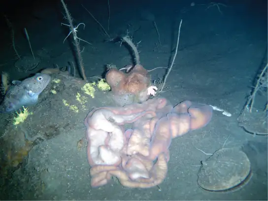
A unique characteristic of this phylum is the presence of an eversible proboscis enclosed in a pocket called a rhynchocoel (not part of the animal's actual coelom). The proboscis is located dorsal to the gut and serves as a harpoon or tentacle for food capture. In some species it is ornamented with barbs. The rhynchocoel is a fluid-filled cavity that extends from the head to nearly two-thirds of the length of the gut in these animals (Figure 28.20). The proboscis may be extended by hydrostatic pressure generated by contraction of muscle of the rhynchocoel and retracted by a retractor muscle attached to the rear wall of the rhynchocoel.
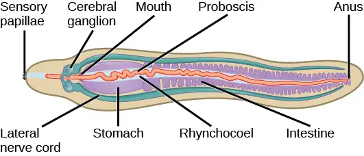
Interactive
Watch this video to see a nemertean attack a polychaete with its proboscis.
Digestive System¶
The nemerteans, which are primarily predators of annelids and crustaceans, have a well-developed digestive system. A mouth opening that is ventral to the rhynchocoel leads into the foregut, followed by the intestine. The intestine is present in the form of diverticular pouches and ends in a rectum that opens via an anus. Gonads are interspersed with the intestinal diverticular pouches and open outward via genital pores.
Nemerteans are sometimes classified as acoels, but because their closed circulatory system is derived from the coelomic cavity of the embryo, they may be regarded as coelomic. Their circulatory system consists of a closed loop formed by a connected pair of lateral blood vessels. Some species may also have a dorsal vessel or cross-connecting vessels in addition to lateral ones. Although the circulatory fluid contains cells, it is often colorless. However, the blood cells of some species bear hemoglobin as well as other yellow or green pigments. The blood vessels are contractile, although there is usually no regular circulatory pathway, and movement of blood is also facilitated by the contraction of muscles in the body wall. The circulation of fluids in the rhynchocoel is more or less independent of the blood circulation, although blind branches from the blood vessels into the rhynchocoel wall can mediate exchange of materials between them. A pair of protonephridia, or excretory tubules, is present in these animals to facilitate osmoregulation. Gaseous exchange occurs through the skin.
Nervous System¶
Nemerteans have a "brain" composed of four ganglia situated at the anterior end, around the rhynchocoel. Paired longitudinal nerve cords emerge from the brain ganglia and extend to the posterior end. Additional nerve cords are found in some species. Interestingly, the brain can contain hemoglobin, which acts as an oxygen reserve. Ocelli or eyespots are present in pairs, in multiples of two in the anterior portion of the body. It is speculated that the eyespots originate from neural tissue and not from the epidermis.
Reproduction¶
Nemerteans, like flatworms, have excellent powers of regeneration, and asexual reproduction by fragmentation is seen in some species. Most animals in phylum Nemertea are dioecious, although freshwater species may be hermaphroditic. Stem cells that become gametes aggregate within gonads placed along the digestive tract. Eggs and sperm are released into the water, and fertilization occurs externally. Like most lophotrochozoan protostomes, cleavage is spiral, and development is usually direct, although some species have a trochophore-like larva, in which a young worm is constructed from a series of imaginal discs that begin as invaginations from the body surface of the larva.
28.4 Superphylum Lophotrochozoa: Mollusks and Annelids¶
Learning Objectives
By the end of this section, you will be able to do the following:
- Describe the unique anatomical and morphological features of mollusks and annelids
- Describe the formation of the coelom
- Identify an important extracoelomic cavity in mollusks
- Describe the major body regions of Mollusca and how they vary in different molluscan classes
- Discuss the advantages of true body segmentation
- Describe the features of animals classified in phylum Annelida
The annelids and the mollusks are the most familiar of the lophotrochozoan protostomes. They are also more “typical” lophotrochozoans, since both groups include aquatic species with trochophore larvae, which unite both taxa in common ancestry. These phyla show how a flexible body plan can lead to biological success in terms of abundance and species diversity. The phylum Mollusca has the second greatest number of species of all animal phyla with nearly 100,000 described extant species, and about 80,000 described extinct species. In fact, it is estimated that about 25 percent of all known marine species are mollusks! The annelids and mollusks are both bilaterally symmetrical, cephalized, triploblastic, schizocoelous eucoelomates They include animals you are likely to see in your backyard or on your dinner plate!
Phylum Mollusca¶
The name “Mollusca” means “soft” body, since the earliest descriptions of mollusks came from observations of “squishy,” unshelled cuttlefish. Molluscs are predominantly a marine group of animals; however, they are also known to inhabit freshwater as well as terrestrial habitats. This enormous phylum includes chitons, tusk shells, snails, slugs, nudibranchs, sea butterflies, clams, mussels, oysters, squids, octopuses, and nautiluses. Mollusks display a wide range of morphologies in each class and subclass, but share a few key characteristics (Figure 28.21). The chief locomotor structure is usually a muscular foot. Most internal organs are contained in a region called the visceral mass. Overlying the visceral mass is a fold of tissue called the mantle; within the cavity formed by the mantle are respiratory structures called gills, that typically fold over the visceral mass. The mouths of most mollusks, except bivalves (e.g., clams) contain a specialized feeding organ called a radula, an abrasive tonguelike structure. Finally, the mantle secretes a calcium-carbonate-hardened shell in most mollusks, although this is greatly reduced in the class Cephalopoda, which contains the octopuses and squids.
Visual Connection
![The illustration shows a cross-section of a snail. The body of the snail is called the visceral mass. The mouth leads to a crop, then to the stomach, which is toward the back of the animal. The intestines are located above the stomach. The intestines continue forward, and empty into a cavity above the front part of the visceral mass. Two nerve cords wrap around the esophagus and extend back along the bottom of the animal. The gill is located in the cavity in the shell, and connects to the heart in the visceral mass. The coelom is near the heart. The visceral mass is surrounded by a mantle. A shell covers the mantle.](img/figure-28-03-08.webp)
Which of the following statements about the anatomy of a mollusk is false?
- Most mollusks have a radula for grinding food.
- A digestive gland is connected to the stomach.
- The tissue beneath the shell is called the mantle.
- The digestive system includes a gizzard, a stomach, a digestive gland, and the intestine.
The muscular foot is the ventral-most organ, whereas the mantle is the limiting dorsal organ that folds over the visceral mass. The foot, which is used for locomotion and anchorage, varies in shape and function, depending on the type of mollusk under study. In shelled mollusks, the foot is usually the same size as the opening of the shell. The foot is both retractable and extendable. In the class Cephalopoda (“head-foot”), the foot takes the form of a funnel for expelling water at high velocity from the mantle cavity; and the anterior margin of the foot has been modified into a circle of arms and tentacles.
The visceral mass is present above the foot, in the visceral hump. This mass contains digestive, nervous, excretory, reproductive, and respiratory systems. Molluscan species that are exclusively aquatic have gills that extend into the mantle cavity, whereas some terrestrial species have "lungs" formed from the lining of the mantle cavity. Mollusks are schizocoelous eucoelomates, but the coelomic cavity in adult animals has been largely reduced to a cavity around the heart. However, a reduced coelom sometimes surrounds the gonads, part of the kidneys, and intestine as well. This overall coelomic reduction makes the mantle cavity the major internal body chamber.
Most mollusks have a special rasp-like organ, the radula, which bears chitinous filelike teeth. The radula is present in all groups except the bivalves, and serves to shred or scrape food before it enters the digestive tract. The mantle (also known as the pallium) is the dorsal epidermis in mollusks; all mollusks except some cephalopods are specialized to secrete a calcareous shell that protects the animal's soft body.
Most mollusks are dioecious animals and fertilization occurs externally, although this is not the case in terrestrial mollusks, such as snails and slugs, or in cephalopods. In most aquatic mollusks, the zygote hatches and produces a trochophore larva, with several bands of cilia around a toplike body, and an additional apical tuft of cilia. In some species, the trochophore may be followed by additional larval stages, such as a veliger larvae, before the final metamorphosis to the adult form. Most cephalopods develop directly into small versions of their adult form.
Classification of Phylum Mollusca¶
Phylum Mollusca comprises a very diverse group of organisms that exhibits a dramatic variety of forms, ranging from chitons to snails to squids, the latter of which typically show a high degree of intelligence. This variability is a consequence of modification of the basic body regions, especially the foot and mantle. The phylum is organized into eight classes: Caudofoveata, Solenogastres, Monoplacophora, Polyplacophora, Gastropoda, Cephalopoda, Bivalvia, and Scaphopoda. Although each molluscan class appears to be monophyletic, their relationship to one another is unclear and still being reviewed.
Both the Caudofoveata and the Solenogastres include shell-less, worm-like animals primarily found in benthic marine habitats. Although these animals lack a calcareous shell, they get some protection from calcareous spicules embedded in a cuticle that covers their epidermis. The mantle cavity is reduced, and both groups lack eyes, tentacles, and nephridia (excretory organs). The Caudofoveata possess a radula, but the Solenogastres do not have a radula or gills. The foot is also reduced in the Solenogastres and absent from the Caudofoveata.
Long thought to be extinct, the first living specimens of Monoplacophora, Neopilina galatheae, were discovered in 1952 on the ocean bottom near the west coast of Costa Rica. Today there are over 25 described species. Members of class Monoplacophora (“bearing one plate”) possess a single, cap-like shell that covers the dorsal body. The morphology of the shell and the underlying animal can vary from circular to ovate. They have a simple radula, a looped digestive system, multiple pairs of excretory organs, and a pair of gonads. Multiple gills are located between the foot and the edge of the mantle.
Animals in class Polyplacophora (“bearing many plates”) are commonly known as “chitons” and bear eight limy plates that make up the dorsal shell (Figure 28.22). These animals have a broad, ventral foot that is adapted for suction onto rocks and other substrates, and a mantle that extends beyond the edge of the shell. Calcareous spines on the exposed mantle edge provide protection from predators. Respiration is facilitated by multiple pairs of gills in the mantle cavity. Blood from the gills is collected in a posterior heart, and then sent to the rest of the body in a hemocoel—an open circulation system in which the blood is contained in connected chambers surrounding various organs rather than within individual blood vessels. The radula, which has teeth composed of an ultra-hard magnetite, is used to scrape food organisms off rocky surfaces. Chiton teeth have been shown to exhibit the greatest hardness and stiffness of any biomineral material reported to date, being as much as three-times harder than human enamel and the calcium carbonate-based shells of mollusks.
The nervous system is rudimentary with only buccal or “cheek” ganglia present at the anterior end. Multiple tiny sensory structures, including photosensors, extend from the mantle into channels in the upper layer of the shell. These structures are called esthetes and are unique to the chitons. Another sensory structure under the radula is used to sample the feeding environment. A single pair of nephridia is used for the excretion of nitrogenous wastes.
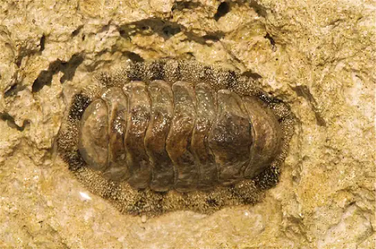
Class Bivalvia (“two-valves”) includes clams, oysters, mussels, scallops, geoducks, and shipworms. Some bivalves are almost microscopic, while others, in the genus Tridacna, may be one meter in length and weigh 225 kilograms. Members of this class are found in marine as well as freshwater habitats. As the name suggests, bivalves are enclosed in two-part valves or shells (Figure 28.23a) fused on the dorsal side by hinge ligaments as well as shell teeth on the ventral side that keep the two halves aligned. The two shells, which consist of an outer organic layer, a middle prismatic layer, and a very smooth nacreous layer, are joined at the oldest part of the shell called the umbo. Anterior and posterior adductor and abductor muscles close and open the shell respectively.
The overall body of the bivalve is laterally flattened; the foot is wedge-shaped; and the head region is poorly developed (with no obvious mouth). Bivalves are filter-feeders, and a radula is absent in this class of mollusks. The mantle cavity is fused along the edges except for openings for the foot and for the intake and expulsion of water, which is circulated through the mantle cavity by the actions of the incurrent and excurrent siphons. During water intake by the incurrent siphon, food particles are captured by the paired posterior gills (ctenidia) and then carried by the movement of cilia forward to the mouth. Excretion and osmoregulation are performed by a pair of nephridia. Eyespots and other sensory structures are located along the edge of the mantle in some species. The "eyes" are especially conspicuous in scallops (Figure 28.23b). Three pairs of connected ganglia regulate activity of different body structures.
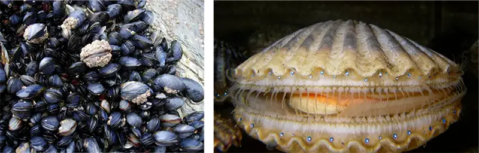
One of the functions of the mantle is to secrete the shell. Some bivalves, like oysters and mussels, possess the unique ability to secrete and deposit a calcareous nacre or “mother of pearl” around foreign particles that may enter the mantle cavity. This property has been commercially exploited to produce pearls.
Interactive
Watch the animations of bivalves feeding: View the process in clams and mussels at these sites.
More than half of molluscan species are in the class Gastropoda (“stomach foot”), which includes well-known mollusks like snails, slugs, conchs, cowries, limpets, and whelks. Aquatic gastropods include both marine and freshwater species, and all terrestrial mollusks are gastropods. Gastropoda includes shell-bearing species as well as species without shells. Gastropod bodies are asymmetrical and usually present a coiled shell (Figure 28.24a). Shells may be planospiral (like a garden hose wound up), commonly seen in garden snails, or conispiral, (like a spiral staircase), commonly seen in marine conches. Cowrie shells have a polished surface because the mantle extends up over the top of the shell as it is secreted.
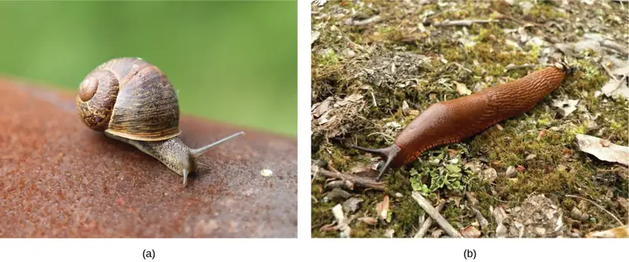
A key characteristic of some gastropods is the embryonic development of torsion. During this process, the mantle and visceral mass are rotated around the perpendicular axis over the center of the foot to bring the anal opening forward just behind the head (Figure 28.25), creating a very peculiar situation. The left gill, kidney, and heart atrium are now on the right side, whereas the original right gill, kidney, and heart atrium are on the left side. Even stranger, the nerve cords have been twisted and contorted into a figure-eight pattern. Because of the space made available by torsion in the mantle cavity, the animal’s sensitive head end can now be withdrawn into the protection of the shell, and the tougher foot (and sometimes the protective covering or operculum) forms a barrier to the outside. The strange arrangement that results from torsion poses a serious sanitation problem by creating the possibility of wastes being washed back over the gills, causing fouling. There is actually no really perfect explanation for the embryonic development of torsion, and some groups that formerly exhibited torsion in their ancestral groups are now known to have reversed the process.
Gastropods also have a foot that is modified for crawling. Most gastropods have a well-defined head with tentacles and eyes. A complex radula is used to scrape up food particles. In aquatic gastropods, the mantle cavity encloses the gills (ctenidia), but in land gastropods, the mantle itself is the major respiratory structure, acting as a kind of lung. Nephridia (“kidneys”) are also found in the mantle cavity.
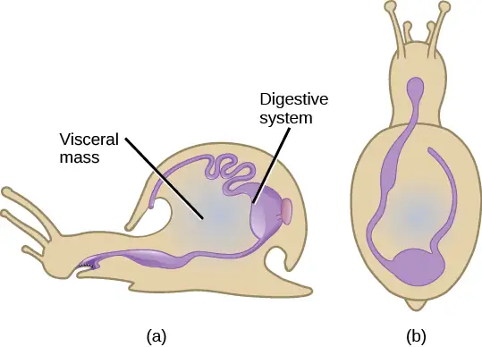
Everyday Connection
Can Snail Venom Be Used as a Pharmacological Painkiller?
Marine snails of the genus Conus (Figure 28.26) attack prey with a venomous stinger, modified from the radula. The toxin released, known as conotoxin, is a peptide with internal disulfide linkages. Conotoxins can bring about paralysis in humans, indicating that this toxin attacks neurological targets. Some conotoxins have been shown to block neuronal ion channels. These findings have led researchers to study conotoxins for possible medical applications.
Conotoxins are an exciting area of potential pharmacological development, since these peptides may be possibly modified and used in specific medical conditions to inhibit the activity of specific neurons. For example, conotoxins or modifications of them may be used to induce paralysis in muscles in specific health applications, similar to the use of botulinum toxin. Since the entire spectrum of conotoxins, as well as their mechanisms of action, is not completely known, the study of their potential applications is still in its infancy. Most research to date has focused on their use to treat neurological diseases. They have also shown some efficacy in relieving chronic pain, and the pain associated with conditions like sciatica and shingles. The study and use of biotoxins—toxins derived from living organisms—are an excellent example of the application of biological science to modern medicine.
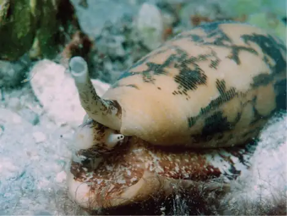
Class Cephalopoda (“head foot” animals), includes octopuses, squids, cuttlefish, and nautiluses. Cephalopods include both animals with shells as well as animals in which the shell is reduced or absent. In the shell-bearing Nautilus, the spiral shell is multi-chambered. These chambers are filled with gas or water to regulate buoyancy. A siphuncle runs through the chambers, and it is this tube that regulates the amount of water and gases (nitrogen, carbon dioxide, and oxygen mixture) present in the chambers. Ammonites and other nautiloid shells are commonly seen in the fossil record. The shell structure in squids and cuttlefish is reduced and is present internally in the form of a squid pen and cuttlefish bone, respectively. Cuttle bone is sold in pet stores to help smooth the beaks of birds and also to provide birds such as egg-laying chickens and quail with an inexpensive natural source of calcium carbonate. Examples of cephalopods are shown in Figure 28.27.
Cephalopods can display vivid and rapidly changing coloration, almost like flashing neon signs. Typically these flashing displays are seen in squids and octopuses, where they may be used for camouflage and possibly as signals for mating displays. We should note, however, that researchers are not entirely sure if squid can actually see color, or see color in the same way as we do. We know that pigments in the skin are contained in special pigment cells (chromatophores), which can expand or contract to produce different color patterns. But chromatophores can only make yellow, red, brown, and black pigmentation; however, underneath them is a whole different set of elements called iridophores and leucophores that reflect light and can make blue, green, and white. It is possible that squid skin might actually be able to detect some light on its own, without even needing its eyes!
All animals in this class are carnivorous predators and have beak-like jaws in addition to the radula. Cephalopods include the most intelligent of the mollusks, and have a well-developed nervous system along with image-forming eyes. Unlike other mollusks, they have a closed circulatory system, in which the blood is entirely contained in vessels rather than in a hemocoel.
The foot is lobed and subdivided into arms and tentacles. Suckers with chitinized rings are present on the arms and tentacles of octopuses and squid. Siphons are well developed and the expulsion of water is used as their primary mode of locomotion, which resembles jet propulsion. Gills (ctenidia) are attached to the wall of the mantle cavity and are serviced by large blood vessels, each with its own heart. A pair of nephridia is present within the mantle cavity for water balance and excretion of nitrogenous wastes. Cephalopods such as squids and octopuses also produce sepia or a dark ink, which contains melanin. The ink gland is located between the gills and can be released into the excurrent water stream. Ink clouds can be used either as a “smoke screen” to hide the animal from predators during a quick attempt at escape, or to create a fake image to distract predators.
Cephalopods are dioecious. Members of a species mate, and the female then lays the eggs in a secluded and protected niche. Females of some species care for the eggs for an extended period of time and may end up dying during that time period. While most other aquatic mollusks produce trochophore larvae, cephalopod eggs develop directly into a juvenile without an intervening larval stage.
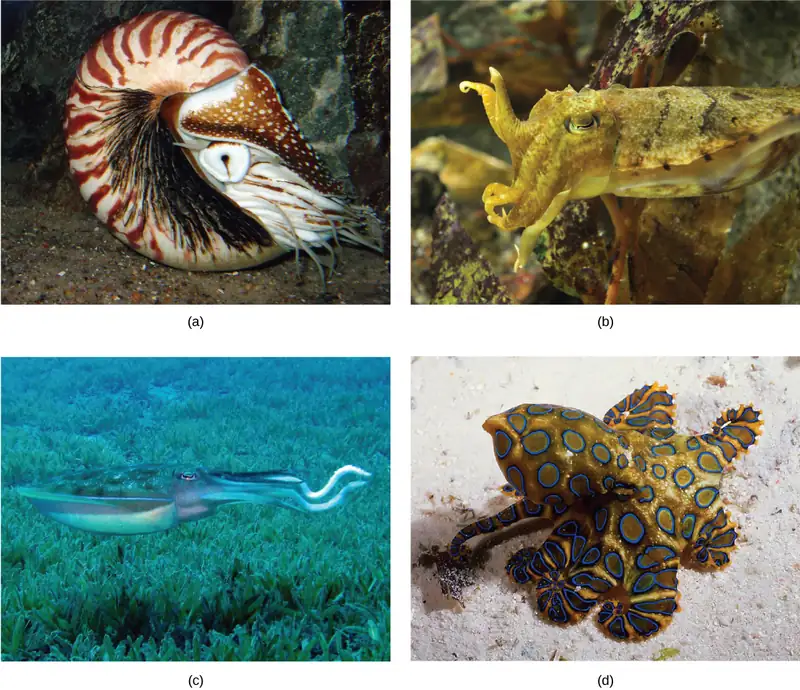
Members of class Scaphopoda (“boat feet”) are known colloquially as “tusk shells” or “tooth shells,” as evident when examining Dentalium, one of the few remaining scaphopod genera (Figure 28.28). Scaphopods are usually buried in sand with the anterior opening exposed to water. These animals have a single conical shell, which is open on both ends. The head is not well developed, but the mouth, containing a radula, opens among a group of tentacles that terminate in ciliated bulbs used to catch and manipulate prey. Scaphopods also have a foot similar to that seen in bivalves. Ctenidia are absent in these animals; the mantle cavity forms a tube open at both ends and serves as the respiratory structure in these animals.
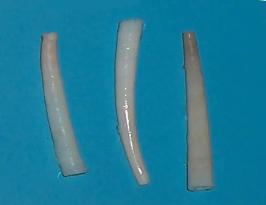
Phylum Annelida¶
Phylum Annelida comprises the true, segmented worms. These animals are found in marine, terrestrial, and freshwater habitats, but the presence of water or humidity is a critical factor for their survival in terrestrial habitats. The annelids are often called “segmented worms” due to their key characteristic of metamerism, or true segmentation. Approximately 22,000 species have been described in phylum Annelida, which includes polychaete worms (marine annelids with multiple appendages), and oligochaetes (earthworms and leeches). Some animals in this phylum show parasitic and commensal symbioses with other species in their habitat.
Morphology¶
Annelids display bilateral symmetry and are worm-like in overall morphology. The name of the phylum is derived from the Latin word annulus, which means a small ring, an apt description of the ring-like segmentation of the body. Annelids have a body plan with metameric segmentation, in which several internal and external morphological features are repeated in each body segment. Metamerism allows animals to become bigger by adding “compartments,” while making their movement more efficient. The overall body can be divided into head, body, and pygidium (or tail). During development, the segments behind the head arise sequentially from a growth region anterior to the pygidium, a pattern called teloblastic growth. In the Oligochaetes, the clitellum is a reproductive structure that generates mucus to aid sperm transfer and also produces a “cocoon,” within which fertilization occurs; it appears as a permanent, fused band located on the anterior third of the animal (Figure 28.29).
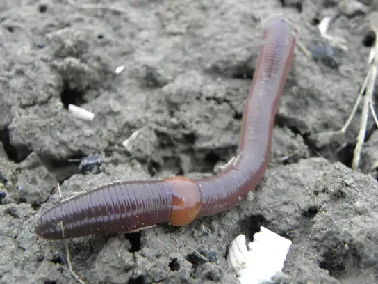
Anatomy¶
The epidermis is protected by a collagenous, external cuticle, which is much thinner than the cuticle found in the ecdysozoans and does not require periodic shedding for growth. Circular as well as longitudinal muscles are located interior to the epidermis. Chitinous bristles called setae (or chaetae) are anchored in the epidermis, each with its own muscle. In the polychaetes, the setae are borne on paired appendages called parapodia.
Most annelids have a well-developed and complete digestive system. Feeding mechanisms vary widely across the phylum. Some polychaetes are filter-feeders that use feather-like appendages to collect small organisms. Others have tentacles, jaws, or an eversible pharynx to capture prey. Earthworms collect small organisms from soil as they burrow through it, and most leeches are blood-feeders armed with teeth or a muscular proboscis. In earthworms, the digestive tract includes a mouth, muscular pharynx, esophagus, crop, and muscular gizzard. The gizzard leads to the intestine, which ends in an anal opening in the terminal segment. A cross-sectional view of a body segment of an earthworm is shown in Figure 28.30; each segment is limited by a membranous septum that divides the coelomic cavity into a series of compartments.
Most annelids possess a closed circulatory system of dorsal and ventral blood vessels that run parallel to the alimentary canal as well as capillaries that service individual tissues. In addition, the dorsal and ventral vessels are connected by transverse loops in every segment. Some polychaetes and leeches have an open system in which the major blood vessels open into a hemocoel. In many species, the blood contains hemoglobin, but not contained in cells. Annelids lack a well-developed respiratory system, and gas exchange occurs across the moist body surface. In the polychaetes, the parapodia are highly vascular and serve as respiratory structures. Excretion is facilitated by a pair of metanephridia (a type of primitive “kidney” that consists of a convoluted tubule and an open, ciliated funnel) that is present in every segment toward the ventral side. Annelids show well-developed nervous systems with a ring of fused ganglia present around the pharynx. The nerve cord is ventral in position and bears enlarged nodes or ganglia in each segment.
![The illustration shows a cross-section of an annelid. The body is divided into segmented compartments. A U-shaped intestine runs through the middle of the compartments, and two ventral nerve cords run along the bottom. In each segment, the nerve cords are connected to each other. A dorsal blood vessel sits on top of the intestine, and a ventral blood vessel rests beneath it. Other vessels connect the dorsal and ventral vessels together. The nephridium is connected to the barrier separating the compartments, and consists of a long coil connected to a trumpet-like bell.](img/figure-28-03-17.webp)
Annelids may be either monoecious with permanent gonads (as in earthworms and leeches) or dioecious with temporary or seasonal gonads (as in polychaetes). However, cross-fertilization is preferred even in hermaphroditic animals. Earthworms may show simultaneous mutual fertilization when they are aligned for copulation. Some leeches change their sex over their reproductive lifetimes. In most polychaetes, fertilization is external and development includes a trochophore larva, which then metamorphizes to the adult form. In oligochaetes, fertilization is typically internal and the fertilized eggs develop in a cocoon produced by the clitellum; development is direct. Polychaetes are excellent regenerators and some even reproduce asexually by budding or fragmentation.
Interactive
This combination video and animation provides a close-up look at annelid anatomy.
Classification of Phylum Annelida¶
Phylum Annelida contains the class Polychaeta (the polychaetes) and the class Oligochaeta (the earthworms, leeches, and their relatives). The earthworms and the leeches form a monophyletic clade within the polychaetes, which are therefore paraphyletic as a group.
There are more than 22,000 different species of annelids, and more than half of these are marine polychaetes ("many bristles"). In the polychaetes, bristles are arranged in clusters on their parapodia—fleshy, flat, paired appendages that protrude from each segment. Many polychaetes use their parapodia to crawl along the sea floor, but others are adapted for swimming or floating. Some are sessile, living in tubes. Some polychaetes live near hydrothermal vents. These deepwater tubeworms have no digestive tract, but have a symbiotic relationship with bacteria living in their bodies.
Earthworms are the most abundant members of the class Oligochaeta ("few bristles"), distinguished by the presence of a permanent clitellum as well as the small number of reduced chaetae on each segment. (Recall that oligochaetes do not have parapodia.) The oligochaete subclass Hirudinea, includes leeches such as the medicinal leech, Hirudo medicinalis, which is effective at increasing blood circulation and breaking up blood clots, and thus can be used to treat some circulatory disorders and cardiovascular diseases. Their use goes back thousands of years. These animals produce a seasonal clitellum, unlike the permanent clitellum of other oligochaetes. A significant difference between leeches and other annelids is the lack of setae and the development of suckers at the anterior and posterior ends, which are used to attach to the host animal. Additionally, in leeches, the segmentation of the body wall may not correspond to the internal segmentation of the coelomic cavity. This adaptation possibly helps the leeches to elongate when they ingest copious quantities of blood from host vertebrates, a condition in which they are said to be “engorged.” The subclass Brachiobdella includes tiny leechlike worms that attach themselves to the gills or body surface of crayfish.
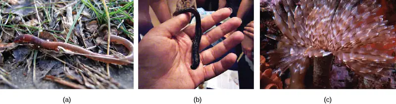
28.5 Superphylum Ecdysozoa: Nematodes and Tardigrades¶
Learning Objectives
By the end of this section, you will be able to do the following:
- Describe the structural organization of nematodes
- Describe the importance of Caenorhabditis elegans in research
- Describe the features of Tardigrades
Superphylum Ecdysozoa¶
The superphylum Ecdysozoa contains an incredibly large number of species. This is because it contains two of the most diverse animal groups: phylum Nematoda (the roundworms) and phylum Arthropoda (the arthropods). The most prominent distinguishing feature of ecdysozoans is the cuticle—a tough, but flexible exoskeleton that protects these animals from water loss, predators, and other dangers of the external environment. One small phylum within the Ecdysozoa, with exceptional resistance to desiccation and other environmental hazards, is the Tardigrada. The nematodes, tardigrades, and arthropods all belong to the superphylum Ecdysozoa, which is believed to be monophyletic—a clade consisting of all evolutionary descendants from one common ancestor. All members of this superphylum periodically go through a molting process that culminates in ecdysis—the actual shedding of the old exoskeleton. (The term “ecdysis” translates roughly as “take off” or “strip.”) During the molting process, old cuticle is replaced by a new cuticle, which is secreted beneath it, and which will last until the next growth period.
Phylum Nematoda¶
The Nematoda, like other members of the superphylum Ecdysozoa, are triploblastic and possess an embryonic mesoderm that is sandwiched between the ectoderm and endoderm. They are also bilaterally symmetrical, meaning that a longitudinal section will divide them into right and left sides that are superficially symmetrical. In contrast with flatworms, nematodes are pseudocoelomates and show a tubular morphology and circular cross-section. Nematodes include both free-living and parasitic forms.
In 1914, N.A. Cobb said, “In short, if all the matter in the universe except the nematodes were swept away, our world would still be dimly recognizable, and if, as disembodied spirits, we could then investigate it, we should find its mountains, hills, vales, rivers, lakes and oceans represented by a thin film of nematodes...” To paraphrase Cobb, nematodes are so abundant that if all the non-nematode matter of the biosphere were removed, there would still remain a shadow of the former world outlined by nematodes!1 The phylum Nematoda includes more than 28,000 species with an estimated 16,000 being parasitic in nature. However, nematologists believe there may be over one million unclassified species.
The name Nematoda is derived from the Greek word “Nemos,” which means “thread,” and includes all true roundworms. Nematodes are present in all habitats, typically with each species occurring in great abundance. The free-living nematode, Caenorhabditis elegans, has been extensively used as a model system for many different avenues of biological inquiry in laboratories all over the world.
Morphology¶
The cylindrical body form of the nematodes is seen in Figure 28.32. These animals have a complete digestive system with a distinct mouth and anus, whereas only one opening is present in the digestive tract of flatworms. The mouth opens into a muscular pharynx and intestine, which leads to a rectum and anal opening at the posterior end. The epidermis can be either a single layer of cells or a syncytium—a multinucleated tissue that in this case is formed by the fusion of many single cells. The cuticle of nematodes is rich in collagen and a polymer called chitin, which forms a protective armor outside the epidermis. The cuticle extends into both ends of the digestive tract, the pharynx, and rectum. In the head, an anterior mouth opening is composed of three (or six) “lips” as well as teeth derived from the cuticle (in some species). Some nematodes may present other modifications of the cuticle such as rings, head shields, or warts. These external rings, however, do not reflect true internal body segmentation, which as we have seen is a hallmark of phylum Annelida. The attachment of the muscles of nematodes differs from that of most animals: they have a longitudinal layer only, and their direct attachment to the dorsal and ventral nerve cords creates a strong muscular contraction that results in a whiplike, almost spastic, body movement.
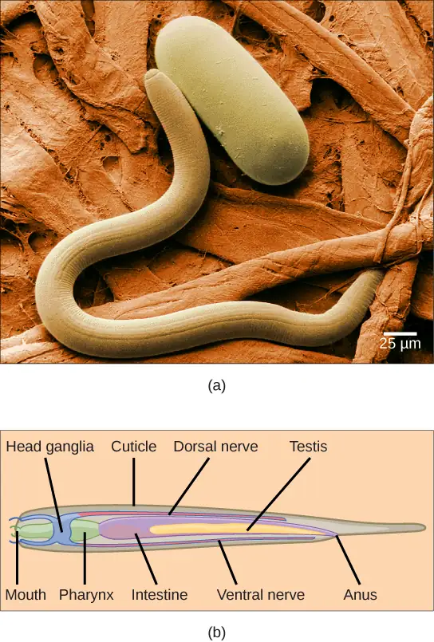
Excretory System¶
In nematodes, specialized excretory systems are not well developed. Nitrogenous wastes, largely in the form of ammonia, are released directly across the body wall. In some nematodes, osmoregulation and salt balance are performed by simple excretory cells or glands that may be connected to paired canals that release wastes through an anterior pore. In marine nematodes, the excretory cells are called renette cells, which are unique to nematodes.
Nervous system¶
Most nematodes have four longitudinal nerve cords that run along the length of the body in dorsal, ventral, and lateral positions. The ventral nerve cord is better developed than the dorsal and lateral cords. Nonetheless, all nerve cords fuse at the anterior end, to form a pharyngeal nerve ring around the pharynx, which acts as the head ganglion or the “brain” of the roundworm. A similar fusion forms a posterior ganglion at the tail. In C. elegans, the nervous system accounts for nearly one-third of the total number of cells in the animal!
Reproduction¶
Nematodes employ a variety of reproductive strategies ranging from monoecious to dioecious to parthenogenetic, depending upon the species. C. elegans is a mostly monoecious species with both self-fertilizing hermaphrodites and some males. In the hermaphrodites, ova and sperm develop at different times in the same gonad. Ova are contained in a uterus and amoeboid sperm are contained in a spermatheca ("sperm receptacle"). The uterus has an external opening known as the vulva. The female genital pore is near the middle of the body, whereas the male genital pore is nearer to the tip. In anatomical males, specialized structures called copulatory spicules at the tail of the male keep him in place and open the vulva of the female into which the amoeboid sperm travel into the spermatheca.
Fertilization is internal, and embryonic development starts very soon after fertilization. The embryo is released from the vulva during the gastrulation stage. The embryonic development stage lasts for 14 hours; development then continues through four successive larval stages with molting and ecdysis taking place between each stage—L1, L2, L3, and L4—ultimately leading to the development of a young adult worm. Adverse environmental conditions such as overcrowding or lack of food can result in the formation of an intermediate larval stage known as the dauer larva. An unusual feature of some nematodes is eutely: the body of a given species contains a specific number of cells as the consequence of a rigid developmental pathway.
Everyday Connection
C. elegans: The Model System for Linking Developmental Studies with Genetics
If biologists wanted to research how nicotine dependence develops in the body, how lipids are regulated, or observe the attractant or repellent properties of certain odors, they would clearly need to design three very different experiments. However, they might only need one subject of study: Caenorhabditis elegans. The nematode C. elegans was brought into the focus of mainstream biological research by Dr. Sydney Brenner. Since 1963, Dr. Brenner and scientists worldwide have used this animal as a model system to study many different physiological and developmental mechanisms.
C. elegans is a free-living nematode found in soil. Only about a millimeter long, it can be cultured on agar plates (10,000 worms/plate!), feeding on the common intestinal bacterium Escherichia coli (another long-term resident of biological laboratories worldwide), and therefore can be readily grown and maintained in a laboratory. The biggest asset of this nematode is its transparency, which helps researchers to observe and monitor changes within the animal with ease. It is also a simple organism with about 1,000 cells and a genome of only 20,000 genes. Its chromosomes are organized into five pairs of autosomes plus a pair of sex chromosomes, making it an ideal candidate with which to study genetics. Since every cell can be visualized and identified, this organism is useful for studying cellular phenomena like cell-to-cell interactions, cell-fate determinations, cell division, apoptosis (cell death), and intracellular transport.
Another tremendous asset is the short life cycle of this worm (Figure 28.33). It takes only three days to achieve the “egg to adult to daughter egg”; therefore, the developmental consequences of genetic changes can be quickly identified. The total life span of C. elegans is two to three weeks; hence, age-related phenomena are also easy to observe. There are two sexes in this species: hermaphrodites (XX) and males (XO). However, anatomical males are relatively infrequently obtained from matings between hermaphrodites, since their XO chromosome composition requires meiotic nondisjunction when both parents are XX. Another feature that makes C. elegans an excellent experimental model is that the position and number of the 959 cells present in adult hermaphrodites of this organism is constant. This feature is extremely significant when studying cell differentiation, cell-to-cell communication, and apoptosis. Lastly, C. elegans is also amenable to genetic manipulations using molecular methods, rounding off its usefulness as a model system.
Biologists worldwide have created information banks and groups dedicated to research using C. elegans. Their findings have led, for example, to better understandings of cell communication during development, neuronal signaling, and insight into lipid regulation (which is important in addressing health issues like the development of obesity and diabetes). In recent years, studies of the cilia in C. elegans have enlightened the medical community with a better understanding of polycystic kidney disease. This simple organism has led biologists to complex and significant findings, growing the field of science in ways that touch the everyday world.
![Photo (a) shows transparent worm about a millimeter in length. Illustration (b) shows the life cycle of C. elegans, which begins when the egg hatches, releasing a L1 juvenile. After 12 hours the L1 juvenile transforms into an L2 juvenile. After 7 hours the L2 juvenile transforms into an L3 juvenile. After another 7 hours the L3 juvenile transforms into an L4 juvenile. After 9 hours the L4 juvenile transforms into an adult. The hermaphroditic adult mates with another adult to produce fertilized eggs which hatch, completing the cycle.](img/figure-28-04-02ab.webp)
Parasitic Nematodes¶
A number of common parasitic nematodes serve as prime examples of parasitism (endoparasitism). These economically and medically important animals exhibit complex life cycles that often involve multiple hosts, and they can have significant medical and veterinary impacts. Here is a partial list of nasty nematodes: Humans may become infected by Dracunculus medinensis, known as guinea worms, when they drink unfiltered water containing copepods (Figure 28.34), an intermediate crustacean host. Hookworms, such as Ancylostoma and Necator, infest the intestines and feed on the blood of mammals, especially of dogs, cats, and humans. Trichina worms (Trichinella) are the causal organism of trichinosis in humans, often resulting from the consumption of undercooked pork; Trichinella can infect other mammalian hosts as well. Ascaris, a large intestinal roundworm, steals nutrition from its human host and may create physical blockage of the intestines. The filarial worms, such as Dirofilaria and Wuchereria, are commonly vectored by mosquitoes, which pass the infective agents among mammals through their blood-sucking activity. One species, Wuchereria bancrofti, infects the lymph nodes of over 120 million people worldwide, usually producing a non-lethal but deforming condition called elephantiasis. In this disease, parts of the body often swell to gigantic proportions due to obstruction of lymphatic drainage, inflammation of lymphatic tissues, and resulting edema. Dirofilaria immitis, a blood-infective parasite, is the notorious dog heartworm species.
![Part A shows a foot with a guinea worm extending from a blister. The end of the worm is wrapped around a stick. Part B shows the life cycle of the guinea worm, which begins when a person drinks unfiltered water containing copepods infected with guinea worm larvae. Larvae, which are released when the copepods die, penetrate the wall of the stomach and intestine. The worms mature and reproduce. Fertilized females migrate to the surface of the skin, where they discharge larvae into the water. Copepods consume the larvae. The copepods are consumed by humans, completing the cycle. About a year after infection, the female worm emerges from the skin.](img/figure-28-04-03.webp)
Phylum Tardigrada¶
The tardigrades ("slow-steppers") comprise a phylum of inconspicuous little animals living in marine, freshwater, or damp terrestrial environments throughout the world. They are commonly called "water bears" because of their plump bodies and the large claws on their stubby legs. There are over 1,000 species, most of which are less than 1 mm in length. A chitinous cuticle covers the body surface and may be divided into plates (Figure 28.35). Tardigrades are known for their ability to enter a state called cryptobiosis, which provides them with resistance to multiple environmental challenges, including desiccation, very low temperatures, vacuum, high pressure, and radiation. They can suspend their metabolic activity for years, and survive the loss of up to 99% of their water content. Their remarkable resistance has recently been attributed to unique proteins that replace water in their cells and protect their internal cell structure and their DNA from damage.
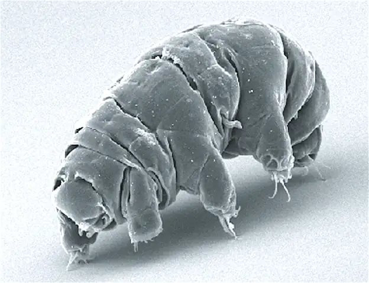
Morphology and Physiology¶
Tardigrades have cylindrical bodies, with four pairs of legs terminating in a number of claws. The cuticle is periodically shed, including the cuticular covering of the claws. The first three pairs of legs are used for walking, and the posterior pair for clinging to the substrate. A circular mouth leads to a muscular pharynx and salivary glands. Tardigrades feed on plants, algae, or small animals. Plant cells are pierced with a chitinous stylet and the cellular contents are then sucked into the gut by the muscular pharynx. Bands of single muscle cells are attached to the various points of the epidermis and extend into the legs to provide ambulatory movement. The major body cavity is a hemocoel, but there are no specialized circulatory structures for moving the blood, nor are there specialized respiratory structures. Malpighian tubules in the hemocoel remove metabolic wastes and transport them to the gut. A dorsal brain is connected to a ventral nerve cord with segmental ganglia associated with the appendages. Sensory structures are greatly reduced, but there is a pair of simple eyespots on the head, and sensory cilia or bristles concentrated toward the head end of the animal.
Reproduction¶
Most tardigrades are dioecious, and males and females each have a single gonad. Mating usually occurs at the time of a molt and fertilization is external. Eggs may be deposited in a molted cuticle or attached to other objects. Development is direct, and the animal may molt a dozen times during its lifetime. In tardigrades, like nematodes, development produces a fixed number of cells, with the actual number of cells being dependent on the species. Further growth occurs by enlarging the cells, not by multiplying them.
28.6 Superphylum Ecdysozoa: Arthropods¶
Learning Objectives
By the end of this section, you will be able to do the following:
- Compare the internal systems and appendage specializations of phylum Arthropoda
- Discuss the environmental importance of arthropods
- Discuss the reasons for arthropod success and abundance
The superphylum Ecdysozoa also includes the phylum Arthropoda, one of the most successful clades of animals on the planet. Arthropods are coelomate organisms characterized by a sturdy chitinous exoskeleton and jointed appendages. There are well over a million arthropod species described, and systematists believe that there are millions of species awaiting proper classification. Like other Ecdysozoa, all arthropods periodically go through the physiological process of molting, followed by ecdysis (the actual shedding of the exoskeleton), as they grow. Arthropods are eucoelomate, protostomic organisms, often with incredibly complicated life cycles.
Phylum Arthropoda¶
The name “arthropoda” means “jointed feet.” The name aptly describes the invertebrates included in this phylum. Arthropods have probably always dominated the animal kingdom in terms of number of species and likely will continue to do so: An estimated 85 percent of all known species are included in this phylum! In effect, life on Earth could conceivably be called the Age of Arthropods beginning nearly 500 million years ago.
The principal characteristics of all the animals in this phylum are the structural and functional segmentation of the body and the presence of jointed appendages. Arthropods have an exoskeleton made principally of chitin—a waterproof, tough polysaccharide composed of N-acetylglucosamine. Phylum Arthropoda is the most speciose clade in the animal world (Table 28.1), and insects form the single largest class within this phylum. For comparison, refer to the approximate numbers of species in the phyla listed below.
Table 28.1
| Phylum | # species |
| Ctenophora | 100 |
| Porifera | 5,000 |
| Cnidaria | 11,000 |
| Platyhelminthes | 25,000 |
| Rotifera | 2,000 |
| Nemertea | 1,200 |
| Annelida | 22,000 |
| Mollusca | 112,000 |
| Nematoda | 28,000+ |
| Tardigrades | >1,000 |
| Arthropoda | 1,134,000 |
| Echinodermata | 7,000 |
| Chordata | 100,000 |
Phylum Arthropoda includes animals that have been successful in colonizing terrestrial, aquatic, and aerial habitats. This phylum is further classified into five subphyla: Trilobita (trilobites, all extinct), Chelicerata (horseshoe crabs, spiders, scorpions, ticks, mites, and daddy longlegs or harvestmen), Myriapoda (millipedes, centipedes, and their relatives), Crustacea (crabs, lobsters, crayfish, isopods, barnacles, and some zooplankton), and Hexapoda (insects and their six-legged relatives). Trilobites, an extinct group of arthropods found chiefly during the Cambrian Era (about 500 million years ago), are probably most closely related to the Chelicerata. These are identified based on their fossils; they were quite diverse and radiated significantly into thousands of species before their complete extinction at the end of the Permian about 240 million years ago (Figure 28.36).
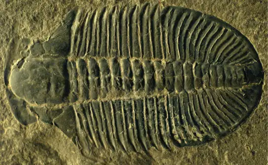
Morphology¶
Characteristic features of the arthropods include the presence of jointed appendages, body segmentation, and chitinized exoskeleton. Fusion of adjacent groups of segments gave rise to functional body regions called tagmata (singular = tagma). Tagmata may be in the form of a head, thorax, and abdomen, or a cephalothorax and abdomen, or a head and trunk, depending on the taxon. Commonly described tagmata may be composed of different numbers of segments; for example, the head of most insects results from the fusion of six ancestral segments, whereas the “head” of another arthropod may be made of fewer ancestral segments, due to independent evolutionary events. Jointed arthropod appendages, often in segmental pairs, have been specialized for various functions: sensing their environment (antennae), capturing and manipulating food (mandibles and maxillae), as well as for walking, jumping, digging, and swimming.
In the arthropod body, a central cavity, called the hemocoel (or blood cavity), is present, and the hemocoel fluids are moved by contraction of regions of the tubular dorsal blood vessel called "hearts." Groups of arthropods also differ in the organs used for nitrogenous waste excretion, with crustaceans possessing green glands and insects using Malpighian tubules, which work in conjunction with the hindgut to reabsorb water while ridding the body of nitrogenous waste. The nervous system tends to be distributed among the segments, with larger ganglia in segments with sensory structures or appendages. The ganglia are connected by a ventral nerve cord.
Respiratory systems vary depending on the group of arthropod. Insects and myriapods use a series of tubes (tracheae) that branch through the body, ending in minute tracheoles. These fine respiratory tubes perform gas exchange directly between the air and cells within the organism. The major tracheae open to the surface of the cuticle via apertures called spiracles. We should note that these tracheal systems of ventilation have evolved independently in hexapods, myriapods, and arachnids. Although the tracheal system works extremely well in terrestrial environments, it also works well in freshwater aquatic environments: In fact, numerous species of aquatic insects in both immature and adult stages possess tracheal systems. However, although there are insects that live on the surface of marine environments, none is strictly marine—meaning that they complete their entire metamorphosis in salt water.
In contrast, aquatic crustaceans utilize gills, terrestrial chelicerates employ book lungs, and aquatic chelicerates use book gills (Figure 28.37). The book lungs of arachnids (scorpions, spiders, ticks, and mites) contain a vertical stack of hemocoel wall tissue that somewhat resembles the pages of a book. Between each of the "pages" of tissue is an air space. This allows both sides of the tissue to be in contact with the air at all times, greatly increasing the efficiency of gas exchange. The gills of crustaceans are filamentous structures that exchange gases with the surrounding water.
The cuticle is the hard “covering” of an arthropod. It is made up of two layers: the epicuticle, which is a thin, waxy, water-resistant outer layer containing no chitin, and the layer beneath it, the chitinous procuticle, which itself is composed of an exocuticle and a lower endocuticle, all supported ultimately by a basement membrane. The exoskeleton is very protective (it is sometimes difficult to squish a big beetle!), but does not sacrifice flexibility or mobility. Both the exocuticle (which is secreted before a molt), and an endocuticle, (which is secreted after a molt), are composed of chitin bound with a protein; chitin is insoluble in water, alkalis, and weak acids. The procuticle is not only flexible and lightweight, but also provides protection against dehydration and other biological and physical stresses. Some arthropods, such as the crustaceans, add calcium salts to their exoskeleton, which increases the strength of the cuticle, but does reduce its flexibility. In some cases, such as lobsters, the amount of calcium salt deposited within the chitin is extreme. In order to grow, the arthropod must “shed” the exoskeleton during the physiological process called molting, following by the actual stripping of the outer cuticle, called ecdysis (“to strip off”). At first, this seems to be a dangerous method of growth, because while the new exoskeleton is hardening, the animal is vulnerable to predation; however, molting and ecdysis also allow for growth and change in morphology, as well as for great diversification in size, simply because the numbers of molts can be modified through evolution.
The characteristic morphology of representative animals from each subphylum is described below.
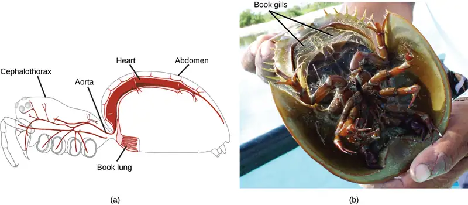
Subphylum Chelicerata¶
This subphylum includes animals such as horseshoe crabs, sea spiders, spiders, mites, ticks, scorpions, whip scorpions, and harvestmen. Chelicerates are predominantly terrestrial, although some freshwater and marine species also exist. An estimated 77,000 species of chelicerates can be found in almost all terrestrial habitats.
The body of chelicerates is divided into two tagmata: prosoma and opisthosoma, which are basically the equivalents of a cephalothorax (usually smaller) and an abdomen (usually larger). A distinct “head” tagma is not usually discernible. The phylum derives its name from the first pair of appendages: the chelicerae (Figure 28.38), which serve as specialized clawlike or fanglike mouthparts. We should note here that chelicerae are actually modified legs, but they are not the exact serial equivalent of mandibles, which are the modified leglike chewing mouthparts of insects and crustaceans: The chelicerae are borne on the first segment making up the prosoma, whereas the mandibles are embryonically on the fourth segment of the mandibulate head. The chelicerates have secondarily lost their antennae and hence do not have them. Some of the functions of the antennae (such as touch) are now performed by the second pair of appendages— the pedipalps, which may also be used for general sensing the environment as well as the manipulation of food. In some species, such as sea spiders, an additional pair of derived leg appendages, called ovigers, is present between the chelicerae and pedipalps. Ovigers are used for grooming and by males to carry eggs. In spiders, the chelicerae are often modified and terminate in fangs that inject venom into their prey before feeding (Figure 28.39).
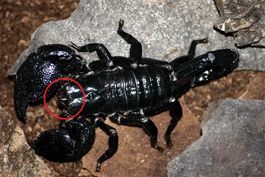
Most chelicerates ingest food using a preoral cavity formed by the chelicerae and pedipalps. Some chelicerates may secrete digestive enzymes to pre-digest food before ingesting it. Parasitic chelicerates like ticks and mites have evolved blood-sucking apparatuses. Members of this subphylum have an open circulatory system with a heart that pumps blood into the hemocoel. Aquatic species, like horseshoe crabs, have gills, whereas terrestrial species have either tracheae or book lungs for gaseous exchange. Chelicerate hemolymph contains hemocyanin a copper-containing oxygen transport protein.
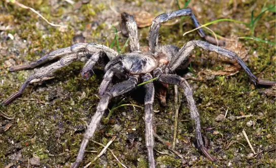
The nervous system in chelicerates consists of a brain and two ventral nerve cords. Chelicerates are dioecious, meaning that the sexes are separate. These animals use external fertilization as well as internal fertilization strategies for reproduction, depending upon the species and its habitat. Parental care for the young ranges from absolutely none to relatively prolonged care.
Interactive
Visit this site to click through a lesson on arthropods, including interactive habitat maps, and more.
Subphylum Myriapoda¶
Subphylum Myriapoda comprises arthropods with numerous legs. Although the name is misleading, suggesting that thousands of legs are present in these invertebrates, the number of legs typically varies from 10 to 750. This subphylum includes 16,000 species; the most commonly found examples are millipedes and centipedes. Virtually all myriapods are terrestrial animals and prefer a humid environment. Ancient myriapods (or myriapod-like arthropods) from the Silurian to the Devonian grew up to 10 feet in length (three meters). Unfortunately, they are all extinct!
Myriapods are typically found in moist soils, decaying biological material, and leaf litter. Subphylum Myriapoda is divided into four classes: Chilopoda, Symphyla, Diplopoda, and Pauropoda. Centipedes like Scutigera coleoptrata (Figure 28.40) are classified as chilopods. These animals bear one pair of legs per segment, mandibles as mouthparts, and are somewhat dorsoventrally flattened. All centipedes are predators, and the legs in the first segment are modified to form forcipules (poison claws) that deliver poison to prey. Symphyla are similar to centipedes, but lack the poison claws and are vegetarian. Millipedes bear two pairs of legs per diplosegment—a feature that results from the embryonic fusion of adjacent pairs of body segments. These arthropods are usually rounder in cross-section than centipedes, and are herbivores or detritivores. Millipedes have two pairs of legs per segment, positioned under the body, as compared to centipedes, who have one pair per segment, positioned laterally to the body (Figure 28.40b). Millipedes feed on decomposing plant material, while centipedes are predatory and eat insects that they kill with their venom. The Pauropods are similar to millipedes, but have fewer segments.
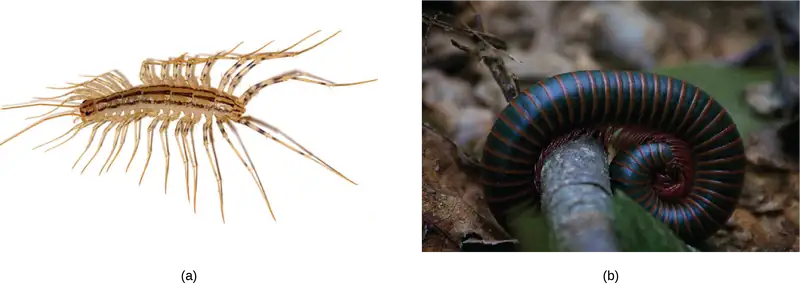
Subphylum Crustacea¶
Crustaceans are the most dominant aquatic (both freshwater and marine) arthropods, with the total number of marine crustaceans standing at about 70,000 species. Krill, shrimp, lobsters, crabs, and crayfish are examples of crustaceans (Figure 28.41). However, there are also a number of terrestrial crustacean species as well: Terrestrial species like the wood lice (Armadillidium spp.), also called pill bugs, roly-polies, potato bugs, or isopods, are also crustaceans. Nonetheless, the number of terrestrial species in this subphylum is relatively low.
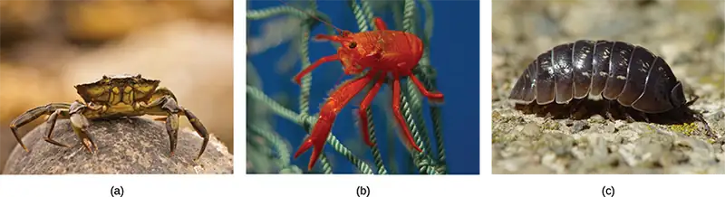
Crustaceans typically possess two pairs of antennae, mandibles as mouthparts, and biramous (“two branched”) appendages, which means that their legs are formed in two parts called endopods and exopods, which appear superficially distinct from the uniramous (“one branched”) legs of myriapods and hexapods (Figure 28.42). Since biramous appendages are also seen in the trilobites, biramous appendages represent the ancestral condition in the arthropods. Currently, we describe various arthropods as having uniramous or biramous appendages, but these are descriptive only, and do not necessarily reflect evolutionary relationships other than that all jointed legs of arthropods share common ancestry.
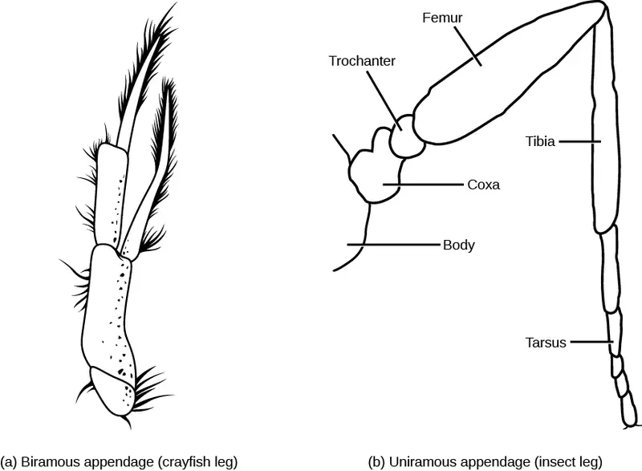
In most crustaceans, the head and thorax is fused to form a cephalothorax (Figure 28.43), which is covered by a plate called the carapace, thus producing a body plan comprising two tagmata: cephalothorax and abdomen. Crustaceans have a chitinous exoskeleton that is shed by molting and ecdysis whenever the animal requires an increase in size or the next stage of development. The exoskeletons of many aquatic species are also infused with calcium carbonate, which makes them even stronger than those of other arthropods. Crustaceans have an open circulatory system where blood is pumped into the hemocoel by the dorsally located heart. Hemocyanin is the major respiratory pigment present in crustaceans, but hemoglobin is found in a few species and both are dissolved in the hemolymph rather than carried in cells.
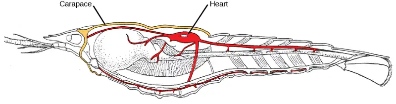
As in the chelicerates, most crustaceans are dioecious. However, some species like barnacles may be hermaphrodites. Serial hermaphroditism, where the gonad can switch from producing sperm to ova, is also exhibited in some species. Fertilized eggs may be held within the female of the species or may be released in the water. Terrestrial crustaceans seek out damp spaces in their habitats to lay eggs.
Larval stages—nauplius or zoea—are seen in the early development of aquatic crustaceans. A cypris larva is also seen in the early development of barnacles (Figure 28.44).
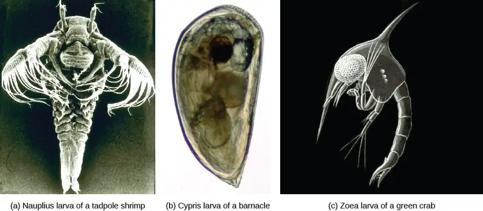
Crustaceans possess a brain formed by the fusion of the first three segmental ganglia, as well as two compound eyes. A ventral nerve cord connects additional segmental ganglia. Most crustaceans are carnivorous, but herbivorous and detritivorous species, and even endoparasitic species are known. A highly evolved endoparasitic species, such as Sacculina spp., parasitizes its crab host and ultimately destroys it after it forces the host to incubate the parasite’s eggs! Crustaceans may also be cannibalistic when extremely high populations of these organisms are present.
Subphylum Hexapoda¶
The insects comprise the largest clade of arthropods in terms of species diversity as well as in terms of biomass—at least in terrestrial habitats.
The name Hexapoda describes the presence of six legs (three pairs) in these animals, which differentiates them from other groups of arthropods that have different numbers of legs. In some cases, however, the number of legs has been evolutionarily reduced, or the legs have been highly modified to accommodate specific conditions, such as endoparasitism. Hexapod bodies are organized into three tagmata: head, thorax, and abdomen. Individual segments of the head have mouthparts derived from jointed legs, and the thorax has three pairs of jointed appendages, and also wings, in most derived groups. For example, in the pterygotes (winged insects), in addition to a pair of jointed legs on all three segments comprising the thorax—prothorax, mesothorax, and metathorax—there are veined wings on the mesothorax and metathorax.
Appendages found on other body segments are also evolutionarily derived from modified legs. Typically, the head bears an upper “lip” or labrum and mandibles (or derivation of mandibles) that serve as mouthparts; maxillae, and a lower “lip” called a labium: both of which manipulate food. The head also has one pair of sensory antennae, as well as sensory organs such as a pair of compound eyes, ocelli (simple eyes), and numerous sensory hairs. The abdomen usually has 11 segments and bears external reproductive apertures. The subphylum Hexapoda includes some insects that are winged (such as fruit flies) and others that are secondarily wingless (such as fleas). The only order of “primitively wingless” insects is the Thysanura, the bristletails. All other orders are winged or are descendants of formally winged insects.
The evolution of wings is a major, unsolved mystery. Unlike vertebrates, whose “wings” are simply preadaptations of “arms” that served as the structural foundations for the evolution of functional wings (this has occurred independently in pterosaurs, dinosaurs [birds], and bats), the evolution of wings in insects is a what we call a de novo (new) development that has given the pteryogotes domination over the Earth. Winged insects existed over 425 million years ago, and by the Carboniferous, several orders of winged insects (Paleoptera), most of which are now extinct, had evolved. There is good physical evidence that Paleozoic nymphs with thoracic winglets (perhaps hinged, former gill covers of semi-aquatic species) used these devices on land to elevate the thoracic temperature (the thorax is where the legs are located) to levels that would enable them to escape predators faster, find more food resources and mates, and disperse more easily. The thoracic winglets (which can be found on fossilized insects preceding the advent of truly winged insects) could have easily been selected for thermoregulatory purposes prior to reaching a size that would have allowed them the capacity for gliding or actual flapping flight. Even modern insects with broadly attached wings, such as butterflies, use the basal one-third of their wings (the area next to the thorax) for thermoregulation, and the outer two-thirds for flight, camouflage, and mate selection.
Many of the common insects we encounter on a daily basis—including ants, beetles, cockroaches, butterflies, crickets and flies—are examples of Hexapoda. Among these, adult ants, beetles, flies, and butterflies develop by complete metamorphosis from grub-like or caterpillar-like larvae, whereas adult cockroaches and crickets develop through a gradual or incomplete metamorphosis from wingless immatures. All growth occurs during the juvenile stages. Adults do not grow further (but may become larger) after their final molt. Variations in wing, leg, and mouthpart morphology all contribute to the enormous variety seen in the insects. Insect variability was also encouraged by their activity as pollinators and their coevolution with flowering plants. Some insects, especially termites, ants, bees, and wasps, are eusocial, meaning that they live in large groups with individuals assigned to specific roles or castes, like queen, drone, and worker. Social insects use pheromones—external chemical signals—to communicate and maintain group structure as well as a cohesive colony.
Visual Connection
![The illustration shows the anatomy of a bee. The overall body plan consists of a head, a thorax, and an abdomen region, with antennae attached to the head. The digestive system consists of a mouth, pharynx, crop, stomach, intestine, and anus. The respiratory system consists of spiracles, or openings, along the side of the bee’s body that connect to tracheas that run up and join a larger dorsal tube that connects all the spiracles together. The circulatory system consists of a dorsal blood vessel that has multiple hearts along its length. The nervous system consists of cerebral ganglia in the head that connect to a ventral nerve cord with segmented ganglia. An ovary is illustrated and located in the dorsal mid abdomen portion of the body.](img/figure-28-04-06.webp)
Which of the following statements about insects is false?
- Insects have both dorsal and ventral blood vessels.
- Insects have spiracles, openings that allow air to enter into the tracheal system.
- The trachea is part of the digestive system.
- Most insects have a well-developed digestive system with a mouth, crop, and intestine.
28.7 Superphylum Deuterostomia¶
Learning Objectives
By the end of this section, you will be able to do the following:
- Describe the distinguishing characteristics of echinoderms
- Describe the distinguishing characteristics of chordates
The phyla Echinodermata and Chordata (the phylum that includes humans) both belong to the superphylum Deuterostomia. Recall that protostomes and deuterostomes differ in certain aspects of their embryonic development, and they are named based on which opening of the archenteron (primitive gut tube) develops first. The word deuterostome comes from the Greek word meaning “mouth second,” indicating that the mouth develops as a secondary structure opposite the location of the blastopore, which becomes the anus. In protostomes (“mouth first”), the first embryonic opening becomes the mouth, and the second opening becomes the anus.
There are a series of other developmental characteristics that differ between protostomes and deuterostomes, including the type of early cleavage (embryonic cell division) and the mode of formation of the coelom of the embryo: Protosomes typically exhibit spiral mosaic cleavage whereas deuterostomes exhibit radial regulative cleavage. In deuterostomes, the endodermal lining of the archenteron usually forms buds called coelomic pouches that expand and ultimately obliterate the embryonic blastocoel (the cavity within the blastula and early gastrula) to become the embryonic mesoderm, the third germ layer. This happens when the mesodermal pouches become separated from the invaginating endodermal layer forming the archenteron, then expand and fuse to form the coelomic cavity. The resulting coelom is termed an enterocoelom. The archenteron develops into the alimentary canal, and a mouth opening is formed by invagination of ectoderm at the pole opposite the blastopore of the gastrula. The blastopore forms the anus of the alimentary system in the juvenile and adult forms. Cleavage in most deuterostomes is also indeterminant, meaning that the developmental fates of early embryonic cells are not decided at that point of embryonic development (this is why we could potentially clone most deuterostomes, including ourselves).
The deuterostomes consist of two major clades—the Chordata and the Ambulacraria. The Chordata include the vertebrates and two invertebrate subphyla, the urochordates and the cephalochordates. The Ambulacraria include the echinoderms and the hemichordates, which were once considered to be a chordate subphylum (Figure 28.46). The two clades, in addition to being deuterostomes, have some other interesting features in common. As we have seen, the vast majority of invertebrate animals do not possess a defined bony vertebral endoskeleton, or a bony cranium. However, one of the most ancestral groups of deuterostome invertebrates, the Echinodermata, do produce tiny skeletal “bones” called ossicles that make up a true endoskeleton, or internal skeleton, covered by an epidermis. The Hemichordata (acorn worms and pterobranchs) will not be covered here, but share with the echinoderms a three-part (tripartite) coelom, similar larval forms, and a derived metanephridium that rids the animals of nitrogenous wastes. They also share pharyngeal slits with the chordates (Figure 28.46). In addition, hemichordates have a dorsal nerve cord in the midline of the epidermis, but lack a neural tube, a true notochord and the endostyle and post-anal tail characteristic of chordates.
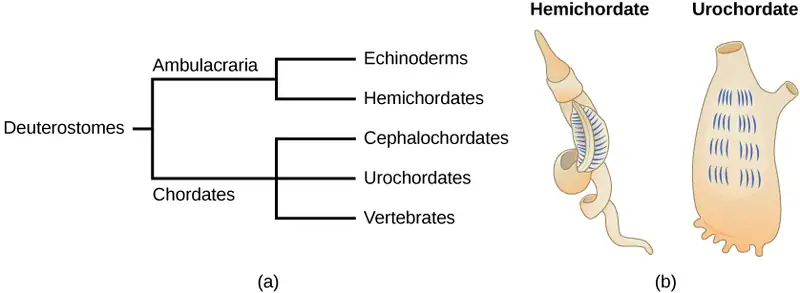
Phylum Echinodermata¶
Echinodermata are named after their “prickly skin” (from the Greek “echinos” meaning “prickly” and “dermos” meaning “skin”). This phylum is a collection of about 7,000 described living species of exclusively marine, bottom-dwelling organisms. Sea stars (Figure 28.47), sea cucumbers, sea urchins, sand dollars, and brittle stars are all examples of echinoderms.
Morphology and Anatomy¶
Despite the adaptive value of bilaterality for most free-living cephalized animals, adult echinoderms exhibit pentaradial symmetry (with “arms” typically arrayed in multiples of five around a central axis). Echinoderms have an endoskeleton made of calcareous ossicles (small bony plates), covered by the epidermis. For this reason, it is an endoskeleton like our own, not an exoskeleton like that of arthropods. The ossicles may be fused together, embedded separately in the connective tissue of the dermis, or be reduced to minute spicules of bone as in sea cucumbers. The spines for which the echinoderms are named are connected to some of the plates. The spines may be moved by small muscles, but they can also be locked into place for defense. In some species, the spines are surrounded by tiny stalked claws called pedicellaria, which help keep the animal's surface clean of debris, protect papulae used in respiration, and sometimes aid in food capture.
The endoskeleton is produced by dermal cells, which also produce several kinds of pigments, imparting vivid colors to these animals. In sea stars, fingerlike projections (papillae) of dermal tissue extend through the endoskeleton and function as gills. Some cells are glandular, and may produce toxins. Each arm or section of the animal contains several different structures: for example, digestive glands, gonads, and the tube feet that are unique to the echinoderms. In echinoderms like sea stars, every arm bears two rows of tube feet on the oral side, running along an external ambulacral groove. These tube feet assist in locomotion, feeding, and chemical sensations, as well as serve to attach some species to the substratum.
![The illustration shows a sea star, which has a mouth on the bottom and an anus on top, both in the middle of the star. The disk-shaped stomach is sandwiched between the mouth and anus. Two tubes radiate from the stomach to each arm, and many small digestive glands connect to these tubes. Beneath the stomach is a central ring canal that also connects to tubes that extend into each arm. Tube feet are attached to these tubes. Each tube foot resembles a medicine dropper, with a bulb-shaped ampulla at the top and an extension called a podium at the bottom. The bottom of the podium protrudes from the bottom of the starfish. There are many podia along the length of the arm, which allow the sea star to latch onto objects and walk. A structure called a madreporite connects to the central ring, and protrudes from the upper surface of the sea star, next to the anus.](img/figure-28-05-01.webp)
Water Vascular and Hemal Systems¶
Echinoderms have a unique ambulacral (water vascular) system, derived from part of the coelom, or “body cavity.” The water vascular system consists of a central ring canal and radial canals that extend along each arm. Each radial canal is connected to a double row of tube feet, which project through holes in the endoskeleton, and function as tactile and ambulatory structures. These tube feet can extend or retract based on the volume of water present in the system of that arm, allowing the animal to move and also allowing it to capture prey with their suckerlike action. Individual tube feet are controlled by bulblike ampullae. Seawater enters the system through an aboral madreporite (opposite the oral area where the mouth is located) and passes to the ring canal through a short stone canal. Water circulating through these structures facilitates gaseous exchange and provides a hydrostatic source for locomotion and prey manipulation. A hemal system, consisting of oral, gastric, and aboral rings, as well as other vessels running roughly parallel to the water vascular system, circulates nutrients. Transport of nutrients and gases is shared by the water vascular and hemal systems in addition to the visceral body cavity that surrounds the major organs.
Nervous System¶
The nervous system in these animals is a relatively simple, comprising a circumoral nerve ring at the center and five radial nerves extending outward along the arms. In addition, several networks of nerves are located in different parts of the body. However, structures analogous to a brain or large ganglia are not present in these animals. Depending on the group, echinoderms may have well-developed sensory organs for touch and chemoreception (e.g., within the tube feet and on tentacles at the tips of the arms), as well as photoreceptors and statocysts.
Digestive and Excretory Systems¶
A mouth, located on the oral (ventral) side, opens through a short esophagus to a large, baglike stomach. The so-called “cardiac” stomach can be everted through the mouth during feeding (for example, when a starfish everts its stomach into a bivalve prey item to digest the animal—alive—within its own shell!) There are masses of digestive glands (pyloric caeca) in each arm, running dorsally along the arms and overlying the reproductive glands below them. After passing through the pyloric caeca in each arm, the digested food is channeled to a small anus, if one exists.
Podocytes—cells specialized for ultrafiltration of bodily fluids—are present near the center of the echinoderm disc, at the junction of the water vascular and hemal systems. These podocytes are connected by an internal system of canals to the madreporite, where water enters the stone canal. The adult echinoderm typically has a spacious and fluid-filled coelom. Cilia aid in circulating the fluid within the body cavity, and lead to the fluid-filled papulae, where the exchange of oxygen and carbon dioxide takes place, as well as the secretion of nitrogenous waste such as ammonia, by diffusion.
Reproduction¶
Echinoderms are dioecious, but males and females are indistinguishable apart from their gametes. Males and females release their gametes into water at the same time and fertilization is external. The early larval stages of all echinoderms (e.g., the bipinnaria of asteroid echinoderms such as sea stars) have bilateral symmetry, although each class of echinoderms has its own larval form. The radially symmetrical adult forms from a cluster of cells in the larva. Sea stars, brittle stars, and sea cucumbers may also reproduce asexually by fragmentation, as well as regenerate body parts lost in trauma, even when over 75 percent of their body mass is lost!
Classes of Echinoderms¶
This phylum is divided into five extant classes: Asteroidea (sea stars), Ophiuroidea (brittle stars), Echinoidea (sea urchins and sand dollars), Crinoidea (sea lilies or feather stars), and Holothuroidea (sea cucumbers) (Figure 28.48).
The most well-known echinoderms are members of class Asteroidea, or sea stars. They come in a large variety of shapes, colors, and sizes, with more than 1,800 species known so far. The key characteristic of sea stars that distinguishes them from other echinoderm classes includes thick arms that extend from a central disk from which various body organs branch into the arms. At the end of each arm are simple eye spots and tentacles that serve as touch receptors. Sea stars use their rows of tube feet not only for gripping surfaces but also for grasping prey. Most sea stars are carnivores and their major prey are in the phylum Mollusca. By manipulating its tube feet, a sea star can open molluscan shells. Sea stars have two stomachs, one of which can protrude through their mouths and secrete digestive juices into or onto prey, even before ingestion. A sea star eating a clam can partially open the shell, and then evert its stomach into the shell, introducing digestive enzymes into the interior of the mollusk. This process can both weaken the strong adductor (closing) muscles of a bivalve and begin the process of digestion.
Interactive
Explore the sea star’s body plan up close, watch one move across the sea floor, and see it devour a mussel.
Brittle stars belong to the class Ophiuroidea ("snake-tails"). Unlike sea stars, which have plump arms, brittle stars have long, thin, flexible arms that are sharply demarcated from the central disk. Brittle stars move by lashing out their arms or wrapping them around objects and pulling themselves forward. Their arms are also used for grasping prey. The water vascular system in ophiuroids is not used for locomotion.
Sea urchins and sand dollars are examples of Echinoidea ("prickly"). These echinoderms do not have arms, but are hemispherical or flattened with five rows of tube feet that extend through five rows of pores in a continuous internal shell called a test. Their tube feet are used to keep the body surface clean. Skeletal plates around the mouth are organized into a complex multipart feeding structure called "Aristotle's lantern." Most echinoids graze on algae, but some are suspension feeders, and others may feed on small animals or organic detritus—the fragmentary remains of plants or animals.
Sea lilies and feather stars are examples of Crinoidea. Sea lilies are sessile, with the body attached to a stalk, but the feather stars can actively move about using leglike cirri that emerge from the aboral surface. Both types of crinoid are suspension feeders, collecting small food organisms along the ambulacral grooves of their feather-like arms. The "feathers" consisted of branched arms lined with tube feet. The tube feet are used to move captured food toward the mouth. There are only about 600 extant species of crinoids, but they were far more numerous and abundant in ancient oceans. Many crinoids are deep-water species, but feather stars typically inhabit shallow areas, especially in subtropical and tropical waters.
Sea cucumbers of class Holothuroidea exhibit an extended oral-aboral axis. These are the only echinoderms that demonstrate “functional” bilateral symmetry as adults, because the extended oral-aboral axis compels the animal to lie horizontally rather than stand vertically. The tube feet are reduced or absent, except on the side on which the animal lies. They have a single gonad and the digestive tract is more typical of a bilaterally symmetrical animal. A pair of gill-like structures called respiratory trees branch from the posterior gut; muscles around the cloaca pump water in and out of these trees. There are clusters of tentacles around the mouth. Some sea cucumbers feed on detritus, while others are suspension feeders, sifting out small organisms with their oral tentacles. Some species of sea cucumbers are unique among the echinoderms in that cells containing hemoglobin circulate in the coelomic fluid, the water vascular system and/or the hemal system.
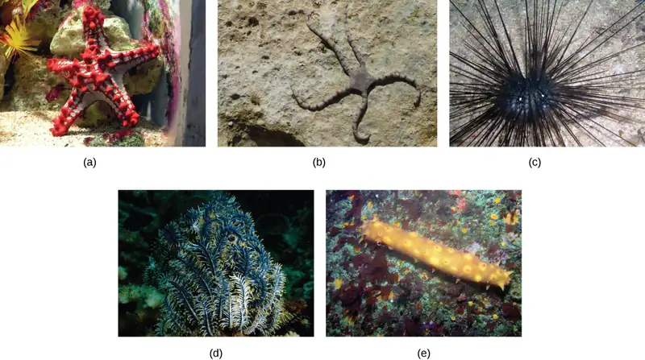
Phylum Chordata¶
Animals in the phylum Chordata share five key features that appear at some stage of their development: a notochord, a dorsal hollow nerve cord, pharyngeal slits, a post-anal tail, and an endostyle/thyroid gland that secretes iodinated hormones. In some groups, some of these traits are present only during embryonic development. In addition to containing vertebrate classes, the phylum Chordata contains two clades of “invertebrates”: Urochordata (tunicates, salps, and larvaceans) and Cephalochordata (lancelets). Most tunicates live on the ocean floor and are suspension feeders. Lancelets are suspension feeders that feed on phytoplankton and other microorganisms. The invertebrate chordates will be discussed more extensively in the following chapter.
Chapter Review¶
Key Terms¶
- amoebocyte
- sponge cell with multiple functions, including nutrient delivery, egg formation, sperm delivery, and cell differentiation
- Annelida
- phylum of vermiform animals with metamerism
- archenteron
- primitive gut cavity within the gastrula that opens outward via the blastopore
- Arthropoda
- phylum of animals with jointed appendages
- biramous
- referring to two branches per appendage
- captacula
- tentacle-like projection that is present in tusks shells to catch prey
- cephalothorax
- fused head and thorax in some species
- chelicera
- modified first pair of appendages in subphylum Chelicerata
- choanocyte
- (also, collar cell) sponge cell that functions to generate a water current and to trap and ingest food particles via phagocytosis
- Chordata
- phylum of animals distinguished by their possession of a notochord, a dorsal, hollow nerve cord, an endostyle, pharyngeal slits, and a post-anal tail at some point in their development
- clitellum
- specialized band of fused segments, which aids in reproduction
- Cnidaria
- phylum of animals that are diploblastic and have radial symmetry
- cnidocyte
- specialized stinging cell found in Cnidaria
- conispiral
- shell shape coiled around a horizontal axis
- corona
- wheel-like structure on the anterior portion of the rotifer that contains cilia and moves food and water toward the mouth
- ctenidium
- specialized gill structure in mollusks
- cuticle (animal)
- the tough, external layer possessed by members of the invertebrate class Ecdysozoa that is periodically molted and replaced
- cypris
- larval stage in the early development of crustaceans
- Echinodermata
- phylum of deuterostomes with spiny skin; exclusively marine organisms
- enterocoelom
- coelom formed by fusion of coelomic pouches budded from the endodermal lining of the archenteron
- epidermis
- outer layer (from ectoderm) that lines the outside of the animal
- extracellular digestion
- food is taken into the gastrovascular cavity, enzymes are secreted into the cavity, and the cells lining the cavity absorb nutrients
- gastrodermis
- inner layer (from endoderm) that lines the digestive cavity
- gastrovascular cavity
- opening that serves as both a mouth and an anus, which is termed an incomplete digestive system
- gemmule
- structure produced by asexual reproduction in freshwater sponges where the morphology is inverted
- hemocoel
- internal body cavity seen in arthropods
- hermaphrodite
- referring to an animal where both male and female gonads are present in the same individual
- invertebrata
- (also, invertebrates) category of animals that do not possess a cranium or vertebral column
- madreporite
- pore for regulating entry and exit of water into the water vascular system
- mantle
- (also, pallium) specialized epidermis that encloses all visceral organs and secretes shells
- mastax
- jawed pharynx unique to the rotifers
- medusa
- free-floating cnidarian body plan with mouth on underside and tentacles hanging down from a bell
- mesoglea
- non-living, gel-like matrix present between ectoderm and endoderm in cnidarians
- mesohyl
- collagen-like gel containing suspended cells that perform various functions in the sponge
- metamerism
- series of body structures that are similar internally and externally, such as segments
- Mollusca
- phylum of protostomes with soft bodies and no segmentation
- nacre
- calcareous secretion produced by bivalves to line the inner side of shells as well as to coat intruding particulate matter
- nauplius
- larval stage in the early development of crustaceans
- nematocyst
- harpoon-like organelle within cnidocyte with pointed projectile and poison to stun and entangle prey
- Nematoda
- phylum of worm-like animals that are triploblastic, pseudocoelomates that can be free-living or parasitic
- Nemertea
- phylum of dorsoventrally flattened protostomes known as ribbon worms
- osculum
- large opening in the sponge’s body through which water leaves
- ostium
- pore present on the sponge’s body through which water enters
- oviger
- additional pair of appendages present on some arthropods between the chelicerae and pedipalps
- parapodium
- fleshy, flat, appendage that protrudes in pairs from each segment of polychaetes
- pedipalp
- second pair of appendages in Chelicerata
- pilidium
- larval form found in some nemertine species
- pinacocyte
- epithelial-like cell that forms the outermost layer of sponges and encloses a jelly-like substance called mesohyl
- planospiral
- shell shape coiled around a vertical axis
- planuliform
- larval form found in phylum Nemertea
- polymorphic
- possessing multiple body plans within the lifecycle of a group of organisms
- polyp
- stalk-like sessile life form of a cnidarians with mouth and tentacles facing upward, usually sessile but may be able to glide along surface
- Porifera
- phylum of animals with no true tissues, but a porous body with rudimentary endoskeleton
- radula
- tongue-like organ with chitinous ornamentation
- rhynchocoel
- cavity present above the mouth that houses the proboscis
- schizocoelom
- coelom formed by groups of cells that split from the endodermal layer
- sclerocyte
- cell that secretes silica spicules into the mesohyl
- seta/chaeta
- chitinous projection from the cuticle
- siphon
- tubular structure that serves as an inlet for water into the mantle cavity
- spicule
- structure made of silica or calcium carbonate that provides structural support for sponges
- spongocoel
- central cavity within the body of some sponges
- trochophore
- first of the two larval stages in mollusks
- uniramous
- referring to one branch per appendage
- veliger
- second of the two larval stages in mollusks
- water vascular system
- system in echinoderms where water is the circulatory fluid
- zoea
- larval stage in the early development of crustaceans
Summary¶
28.1 Phylum Porifera¶
Animals included in phylum Porifera are parazoans because they do not show the formation of true embryonically derived tissues, although they have a number of specific cell types and “functional” tissues such as pinacoderm. These organisms show very simple organization, with a rudimentary endoskeleton of spicules and spongin fibers. Glass sponge cells are connected together in a multinucleated syncytium. Although sponges are very simple in organization, they perform most of the physiological functions typical of more complex animals.
28.2 Phylum Cnidaria¶
Cnidarians represent a more complex level of organization than Porifera. They possess outer and inner tissue layers that sandwich a noncellular mesoglea between them. Cnidarians possess a well-formed digestive system and carry out extracellular digestion in a digestive cavity that extends through much of the animal. The mouth is surrounded by tentacles that contain large numbers of cnidocytes—specialized cells bearing nematocysts used for stinging and capturing prey as well as discouraging predators. Cnidarians have separate sexes and many have a lifecycle that involves two distinct morphological forms—medusoid and polypoid—at various stages in their life cycles. In species with both forms, the medusa is the sexual, gamete-producing stage and the polyp is the asexual stage. Cnidarian species include individual or colonial polypoid forms, floating colonies, or large individual medusa forms (sea jellies).
28.3 Superphylum Lophotrochozoa: Flatworms, Rotifers, and Nemerteans¶
This section describes three phyla of relatively simple invertebrates: one acoelomate, one pseudocoelomate, and one eucoelomate. Flatworms are acoelomate, triploblastic animals. They lack circulatory and respiratory systems, and have a rudimentary excretory system. This digestive system is incomplete in most species, and absent in tapeworms. There are four traditional groups of flatworms, the largely free-living turbellarians, which include polycladid marine worms and tricladid freshwater species, the ectoparasitic monogeneans, and the endoparasitic trematodes and cestodes. Trematodes have complex life cycles involving a molluscan secondary host and a primary host in which sexual reproduction takes place. Cestodes, or tapeworms, infect the digestive systems of their primary vertebrate hosts.
Rotifers are microscopic, multicellular, mostly aquatic organisms that are currently under taxonomic revision. The group is characterized by the ciliated, wheel-like corona, located on their head. Food collected by the corona is passed to another structure unique to this group of organisms—the mastax or jawed pharynx.
The nemerteans are probably simple eucoelomates. These ribbon-shaped animals also bear a specialized proboscis enclosed within a rhynchocoel. The development of a closed circulatory system derived from the coelom is a significant difference seen in this species compared to other phyla described here. Alimentary, nervous, and excretory systems are more developed in the nemerteans than in the flatworms or rotifers. Embryonic development of nemertean worms proceeds via a planuliform or trochophore-like larval stage.
28.4 Superphylum Lophotrochozoa: Mollusks and Annelids¶
Phylum Mollusca is a large, group of protostome schizocoelous invertebrates that occupy marine, freshwater, and terrestrial habitats. Mollusks can be divided into seven classes, each of which exhibits variations on the basic molluscan body plan. Two defining features are the mantle, which secretes a protective calcareous shell in many species, and the radula, a rasping feeding organ found in most classes. Some mollusks have evolved a reduced shell, and others have no radula. The mantle also covers the body and forms a mantle cavity, which is quite distinct from the coelomic cavity—typically reduced to the area surrounding the heart, kidneys, and intestine. In aquatic mollusks, respiration is facilitated by gills (ctenidia) in the mantle cavity. In terrestrial mollusks, the mantle cavity itself serves as an organ of gas exchange. Mollusks also have a muscular foot, which is modified in various ways for locomotion or food capture. Most mollusks have separate sexes. Early development in aquatic species occurs via one or more larval stages, including a trochophore larva, that precedes a veliger larva in some groups.
Phylum Annelida includes vermiform, segmented animals. Segmentation is metameric (i.e., each segment is partitioned internally as well as externally, with various structures repeated in each segment). These animals have well-developed neuronal, circulatory, and digestive systems. The two major groups of annelids are the polychaetes, which have parapodia with multiple bristles, and oligochaetes, which have no parapodia and fewer bristles or no bristles. Oligochaetes, which include earthworms and leeches, have a specialized band of segments known as a clitellum, which secretes a cocoon and protects gametes during reproduction. The leeches do not have full internal segmentation. Reproductive strategies include separate sexes, hermaphroditism, and serial hermaphroditism. Polychaetes typically have trochophore larvae, while the oligochaetes develop more directly.
28.5 Superphylum Ecdysozoa: Nematodes and Tardigrades¶
The defining feature of the Ecdysozoa is a collagenous/chitinous cuticle that covers the body, and the necessity to molt the cuticle periodically during growth. Nematodes are roundworms, with a pseudocoel body cavity. They have a complete digestive system, a differentiated nervous system, and a rudimentary excretory system. The phylum includes free-living species like Caenorhabditis elegans as well as many species of endoparasitic organisms such as Ascaris spp. They include dioecious as well as hermaphroditic species. Embryonic development proceeds via several larval stages, and most adults have a fixed number of cells.
The tardigrades, sometimes called "water bears," are a widespread group of tiny animals with a segmented cuticle covering the epidermis and four pairs of clawed legs. Like the nematodes, they are pseudocoelomates and have a fixed number of cells as adults. Specialized proteins enable them to enter cryptobiosis, a kind of suspended animation during which they can resist a number of adverse environmental conditions.
28.6 Superphylum Ecdysozoa: Arthropods¶
Arthropods represent the most successful animal phylum on Earth, both in terms of the number of species and the number of individuals. As members of the Ecdysozoa, all arthropods have a protective chitinous cuticle that must be periodically molted and shed during development or growth. Arthropods are characterized by a segmented body as well as the presence of jointed appendages. In the basic body plan, a pair of appendages is present per body segment. Within the phylum, traditional classification is based on mouthparts, body subdivisions, number of appendages, and modifications of appendages present. In aquatic arthropods, the chitinous exoskeleton may be calcified. Gills, tracheae, and book lungs facilitate respiration. Unique larval stages are commonly seen in both aquatic and terrestrial groups of arthropods.
28.7 Superphylum Deuterostomia¶
Echinoderms are deuterostome marine organisms, whose adults show five-fold symmetry. This phylum of animals has a calcareous endoskeleton composed of ossicles, or body plates. Epidermal spines are attached to some ossicles and serve in a protective capacity. Echinoderms possess a water-vascular system that serves both for respiration and for locomotion, although other respiratory structures such as papulae and respiratory trees are found in some species. A large aboral madreporite is the point of entry and exit for sea water pumped into the water vascular system. Echinoderms have a variety of feeding techniques ranging from predation to suspension feeding. Osmoregulation is carried out by specialized cells known as podocytes associated with the hemal system.
The characteristic features of the Chordata are a notochord, a dorsal hollow nerve cord, pharyngeal slits, a post-anal tail, and an endostyle/thyroid that secretes iodinated hormones. The phylum Chordata contains two clades of invertebrates: Urochordata (tunicates, salps, and larvaceans) and Cephalochordata (lancelets), together with the vertebrates in the Vertebrata. Most tunicates live on the ocean floor and are suspension feeders. Lancelets are suspension feeders that feed on phytoplankton and other microorganisms. The sister taxon of the Chordates is the Ambulacraria, which includes both the Echinoderms and the hemichordates, which share pharyngeal slits with the chordates.
Visual Connection Questions¶
28.1 Phylum Porifera¶
1. Figure 28.3 Which of the following statements is false?
- Choanocytes have flagella that propel water through the body.
- Pinacocytes can transform into any cell type.
- Lophocytes secrete collagen.
- Porocytes control the flow of water through pores in the sponge body.
Answer
28.4 Superphylum Lophotrochozoa: Mollusks and Annelids¶
2. Figure 28.21 Which of the following statements about the anatomy of a mollusk is false?
- Mollusks have a radula for grinding food.
- A digestive gland is connected to the stomach.
- The tissue beneath the shell is called the mantle.
- The digestive system includes a gizzard, a stomach, a digestive gland, and the intestine.
Answer
28.6 Superphylum Ecdysozoa: Arthropods¶
3. Figure 28.45 Which of the following statements about insects is false?
- Insects have both dorsal and ventral blood vessels.
- Insects have spiracles, openings that allow air to enter into the tracheal system.
- The trachea is part of the digestive system.
- Most insects have a well-developed digestive system with a mouth, crop, and intestine.
Answer
Review Questions¶
28.1 Phylum Porifera¶
4. Mesohyl contains:
- a polysaccharide gel and dead cells.
- a collagen-like gel and suspended cells for various functions.
- spicules composed of silica or calcium carbonate.
- multiple pores.
Answer
B
5. The large central opening in the parazoan body is called the:
- gemmule.
- spicule.
- ostia.
- osculum.
Answer
D
6. Most sponge body plans are slight variations on a simple tube-within-a-tube design. Which of the following is a key limitation of sponge body plans?
- Sponges lack the specialized cell types needed to produce more complex body plans.
- The reliance on osmosis/diffusion requires a design that maximizes the surface area to volume ratio of the sponge.
- Choanocytes must be protected from the hostile exterior environment.
- Spongin cannot support heavy bodies.
Answer
B
28.2 Phylum Cnidaria¶
7. Cnidocytes are found in _____.
- phylum Porifera
- phylum Nemertea
- phylum Nematoda
- phylum Cnidaria
Answer
D
8. Cubozoans are ________.
- polyps
- medusoids
- polymorphs
- sponges
Answer
C
9. While collecting specimens, a marine biologist finds a sessile Cnidarian. The medusas that bud from it swim by contracting a ring of muscle in their bells. To which class does this specimen belong?
- Class Hydrozoa
- Class Cubozoa
- Class Scyphozoa
- Class Anthozoa
Answer
C
28.3 Superphylum Lophotrochozoa: Flatworms, Rotifers, and Nemerteans¶
10. Which group of flatworms are primarily ectoparasites of fish?
- monogeneans
- trematodes
- cestodes
- turbellarians
Answer
A
11. The rhynchocoel is a ________.
- circulatory system
- fluid-filled cavity
- primitive excretory system
- proboscis
Answer
B
28.4 Superphylum Lophotrochozoa: Mollusks and Annelids¶
12. Annelids have (a):
- pseudocoelom.
- true coelom.
- no coelom.
- none of the above
Answer
B
13. A mantle and mantle cavity are present in:
- phylum Echinodermata.
- phylum Adversoidea.
- phylum Mollusca.
- phylum Nemertea.
Answer
C
14. How does segmentation enhance annelid locomotion?
- Segmentation creates repeating body structures so the entire organism functions in synchrony.
- Segmentation allows specialization of different body regions.
- Neural segmentation allows annelids to localize sensations.
- Muscle contractions can be localized to specific regions of the body to coordinate movement.
Answer
D
28.5 Superphylum Ecdysozoa: Nematodes and Tardigrades¶
15. The embryonic development in nematodes can have up to __________ larval stages.
- one
- two
- three
- four
Answer
D
16. The nematode cuticle contains _____.
- glucose
- skin cells
- chitin
- nerve cells
Answer
C
28.6 Superphylum Ecdysozoa: Arthropods¶
17. Crustaceans are _____.
- ecdysozoans
- nematodes
- arachnids
- parazoans
Answer
A
18. Flies are_______.
- chelicerates
- hexapods
- arachnids
- crustaceans
Answer
B
19. Which of the following is not a key advantage provided by the exoskeleton of terrestrial arthropods?
- Prevents dessication
- Protects internal tissue
- Provides mechanical support
- Grows with the arthropod throughout its life
Answer
D
28.7 Superphylum Deuterostomia¶
20. Echinoderms have _____.
- triangular symmetry
- radial symmetry
- hexagonal symmetry
- pentaradial symmetry
Answer
D
21. The circulatory fluid in echinoderms is _____.
- blood
- mesohyl
- water
- saline
Answer
C
22. Which of the following features does not distinguish humans as a member of phylum Chordata?
- Human embryos undergo indeterminate cleavage.
- A spinal cord runs along an adult human’s dorsal side.
- Human embryos exhibit pharyngeal arches and gill slits.
- The human coccyx forms from an embryonic tail.
Answer
A
23. The sister taxon of the Chordata is the _____.
- Mollusca
- Arthropoda
- Ambulacraria
- Rotifera
Answer
C
Critical Thinking Questions¶
28.1 Phylum Porifera¶
24. Describe the different cell types and their functions in sponges.
Answer
Pinacocytes are epithelial-like cells, form the outermost layer of sponges, and enclose a jelly-like substance called mesohyl. In some sponges, porocytes form ostia, single tube-shaped cells that act as valves to regulate the flow of water into the spongocoel. Choanocytes (“collar cells”) are present at various locations, depending on the type of sponge, but they always line some space through which water flows and are used in feeding.
25. Describe the feeding mechanism of sponges and identify how it is different from other animals.
Answer
The sponges draw water carrying food particles into the spongocoel using the beating of flagella on the choanocytes. The food particles are caught by the collar of the choanocyte and are brought into the cell by phagocytosis. Digestion of the food particle takes place inside the cell. The difference between this and the mechanisms of other animals is that digestion takes place within cells rather than outside of cells. It means that the organism can feed only on particles smaller than the cells themselves.
28.2 Phylum Cnidaria¶
26. Explain the function of nematocysts in cnidarians.
Answer
Nematocysts are “stinging cells” designed to paralyze prey. The nematocysts contain a neurotoxin that renders prey immobile.
27. Compare the structural differences between Porifera and Cnidaria.
Answer
Poriferans do not possess true tissues, while cnidarians do have tissues. Because of this difference, poriferans do not have a nervous system or muscles for locomotion, which cnidarians have.
28. Compare the differences in sexual reproduction between Porifera and Cubozoans. How does the difference in fertilization provide an evolutionary advantage to the Cubozoans?
Answer
There are two key differences between Porifera (sponges) and Cubozoans (box jellyfish) – gamete production and fertilization strategy. Box jellyfish have separate sexes, while a single sponge can produce both types of gametes. Box jellyfish also undergo internal fertilization, while sponges reproduce by external fertilization. Internal fertilization allows box jellyfish to control which sperm is used for fertilization and increases the likelihood of ova and spermatozoa meeting.
28.3 Superphylum Lophotrochozoa: Flatworms, Rotifers, and Nemerteans¶
29. How does the tapeworm body plan support widespread dissemination of the parasite?
Answer
The tapeworm bodies are made of a series of small subunits called proglottids. Each proglottid contains a sexually mature reproductive system that can cross-fertilize within a single tapeworm. Proglottids containing fertilized eggs break off the tapeworm, and are transported to the environment to find a new host. Thus, each segment of a tapeworm’s body is capable of infecting new hosts.
28.4 Superphylum Lophotrochozoa: Mollusks and Annelids¶
30. Describe the morphology and anatomy of mollusks.
Answer
Mollusks have a large muscular foot that may be modified in various ways, such as into tentacles, but it functions in locomotion. They have a mantle, a structure of tissue that covers and encloses the dorsal portion of the animal, and secrete the shell when it is present. The mantle encloses the mantle cavity, which houses the gills (when present), excretory pores, anus, and gonadopores. The coelom of mollusks is restricted to the region around the systemic heart. The main body cavity is a hemocoel. Many mollusks have a radula near the mouth that is used for scraping food.
31. What are the anatomical differences between nemertines and mollusks?
Answer
Mollusks have a shell, even if it is a reduced shell. Nemertines do not have a shell. Nemertines have a proboscis; mollusks do not. Nemertines have a closed circulatory system, whereas Mollusks have an open circulatory system.
32. How does a change in the circulatory system organization support the body designs in cephalopods compared to other mollusks?
Answer
Cephalopods have a closed circulatory system, while other members of the Mollusca phylum have open circulatory systems. Having a closed system allows blood to be moved more efficiently and rapidly through the animal, since the circulation is not limited by diffusion. For example, this allows the octopus to have a much more complex body plan, with branching tentacles, compared to a snail. In many cases, a closed circulatory system also allows the development of larger organisms.
28.5 Superphylum Ecdysozoa: Nematodes and Tardigrades¶
33. Enumerate features of Caenorhabditis elegans that make it a valuable model system for biologists.
Answer
It is a true animal with at least rudiments of the physiological systems—feeding, nervous, muscle, and reproductive—found in “higher animals” like mice and humans. It is so small that large numbers can be raised in Petri dishes. It reproduces rapidly. It is transparent so that every cell in the living animal can be seen under the microscope. Before it dies (after 2–3 weeks), it shows signs of aging and thus may provide general clues as to the aging process.
34. What are the different ways in which nematodes can reproduce?
Answer
There are nematodes with separate sexes and hermaphrodites in addition to species that reproduce parthenogentically. The nematode Caenorhabditis elegans has a self-fertilizing hermaphrodite sex and a pure male sex.
35. Why are tardigrades essential to recolonizing habits following destruction or mass extinction?
Answer
Tardigrades are extremely hardy animals that are capable of surviving extreme conditions that kill other species. Following a catastrophic event in the ecosystem, tardigrades are likely to be one of the few surviving species. They can also function as a pioneer species that moves into a vacated habitat. Once the tardigrade population has expanded in the habitat, predators that use tardigrades as a food source are able to return. This pattern continues up the food web until the ecosystem is restored.
28.6 Superphylum Ecdysozoa: Arthropods¶
36. Describe the various superclasses that phylum Arthropoda can be divided into.
Answer
The Arthropoda include the Hexapoda, which are mandibulates with six legs; the Myriapoda, which are mandibulates with many legs and include the centipedes and millipedes; the Crustacea, which are mostly marine mandibulates; and the Chelicerata, which include the spiders and scorpions and their kin.
37. Compare and contrast the segmentation seen in phylum Annelida with that seen in phylum Arthropoda.
Answer
Arthropods have an exoskeleton, which is missing in annelids. Arthropod segmentation is more specialized with major organs concentrated in body tagma. Annelid segmentation is usually more uniform with the intestine extending through most segments.
38. How do terrestrial arthropods of the subphylum Hexapoda impact the world’s food supply? Provide at least two positive and two negative effects.
Answer
Insects are the predominant members of the subphylum Hexapoda.
Advantages:
- Pollination;
- Eliminate pests;
- Cheap food source;
- Produce food products (ex. honey)
Disadvantages:
- Damage to food crops;
- Transmit disease to agricultural workers;
- Contaminate/spoil food;
- Destroy buildings storing food crops
28.7 Superphylum Deuterostomia¶
39. Describe the different classes of echinoderms using examples.
Answer
The Asteroidea are the sea stars, the Echinoidea are the sea urchins and sand dollars, the Ophiuroidea are the brittle stars, the Crinoidea are the sea lilies and feather stars, the Holothuroidea are the sea cucumbers.
Adapted from Biology 2e by OpenStax, licensed under CC BY 4.0. Access the original for free at openstax.org. Changes: converted to the web reading format of The Open Book Project.
-
Stoll, N. R., “This wormy world. 1947,” Journal of Parasitology 85(3) (1999): 392-396. ↩